Unit 1: Limits
& Continuity第 1 单元：极限
与连续性
The foundation of calculus. Master how functions behave near a point, formal limit evaluation, continuity, asymptotes, and the Intermediate Value Theorem. 微积分的基础。掌握函数在某点附近的行为、极限的严格求值、连续性、渐近线与介值定理。
Introducing Calculus: Can Change Occur at an Instant?微积分导引：变化能否在某一瞬间发生？
- Explain why a rate of change at a single instant cannot be computed as change divided by a zero-length interval.
- Calculate an average rate of change over an interval and state its units.
- Estimate an instantaneous rate of change from a table using the narrowest interval of data around the point.
- Interpret a secant slope as an average rate and a tangent slope as an instantaneous rate.
- Describe how the limit of average rates over shrinking intervals gives the instantaneous rate.
- 解释为什么某一瞬间的变化率不能用“改变量除以长度为零的区间”直接计算。
- 计算区间上的平均变化率（
average rate of change）并写出单位。 - 利用表格中包含该点的最窄数据区间估计瞬时变化率。
- 把割线斜率解释为平均变化率，把切线斜率解释为瞬时变化率。
- 说明区间不断缩小时平均变化率的极限如何给出瞬时变化率。
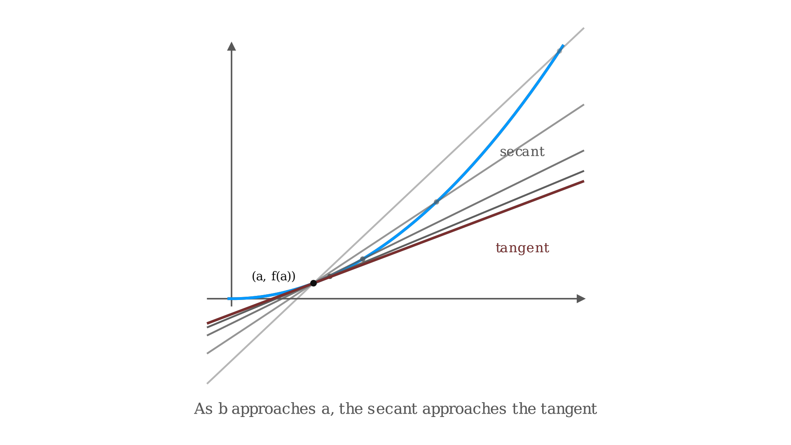
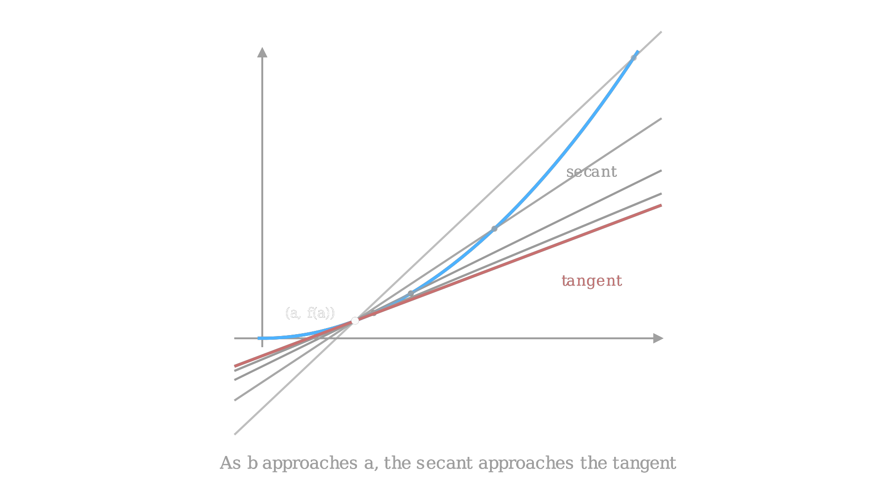
limit）来刻画与建模动态变化。区间上的平均变化率（average rate of change）可以近似某一点处的瞬时变化率（instantaneous rate of change）；当区间长度趋于零时，极限给出精确的瞬时变化率。
The average rate of change is the slope of a secant line. As $b \to a$, the secant line approaches the tangent line, and the AROC approaches the IROC.平均变化率是割线（secant line）的斜率。当 $b \to a$ 时，割线趋近于切线（tangent line），平均变化率也就趋近于瞬时变化率。
When a problem gives a table of values and asks you to approximate an instantaneous rate of change at a point in the table, use the average rate of change over the narrowest interval of table values around that point, and include units (for example °F per minute).
当题目给出数值表并要求近似表中某点处的瞬时变化率时，使用包含该点的最窄表格区间上的平均变化率作答，并带上单位（例如“°F 每分钟”）。
Worked Example: Approximating IROC例题：近似瞬时变化率
Given:已知： Temperature $T(t)$ in °F at time $t$ (minutes):在时刻 $t$（分钟）的温度 $T(t)$（单位：°F）：
| $t$ | 0 | 2 | 5 | 8 | 12 |
| $T(t)$ | 72 | 75 | 80 | 83 | 88 |
Approximate $T'(5)$ using the symmetric interval $[2, 8]$:用对称区间 $[2, 8]$ 近似 $T'(5)$：
$$\begin{aligned} T'(5) &\approx \frac{T(8) - T(2)}{8 - 2} \\[4pt] &= \frac{83 - 75}{6} \\[4pt] &= \frac{8}{6} \approx 1.333 \text{ °F/min} \end{aligned}$$Worked Example: Shrinking the Interval例题：缩小区间
Let $f(x) = x^2$. Find the average rate of change on $[3, 3+h]$ for $h = 0.1, 0.01, 0.001$, then find the instantaneous rate of change at $x = 3$.设 $f(x) = x^2$。分别对 $h = 0.1, 0.01, 0.001$ 求 $[3, 3+h]$ 上的平均变化率，再求 $x = 3$ 处的瞬时变化率。
Step 1: Compute the three averages.第 1 步：计算三个平均变化率。
$$\begin{aligned} h = 0.1:&\quad \frac{3.1^2 - 9}{0.1} = \frac{9.61 - 9}{0.1} = 6.1 \\[4pt] h = 0.01:&\quad \frac{3.01^2 - 9}{0.01} = \frac{9.0601 - 9}{0.01} = 6.01 \\[4pt] h = 0.001:&\quad \frac{3.001^2 - 9}{0.001} = \frac{9.006001 - 9}{0.001} = 6.001 \end{aligned}$$Step 2: Simplify for a general $h$.第 2 步：对一般的 $h$ 化简。
$$\frac{(3+h)^2 - 9}{h} = \frac{6h + h^2}{h} = 6 + h \qquad (h \neq 0)$$Step 3: Let the interval shrink. As $h \to 0$, $6 + h \to 6$, so the instantaneous rate of change at $x = 3$ is $6$.第 3 步：令区间缩小。当 $h \to 0$ 时，$6 + h \to 6$，所以 $x = 3$ 处的瞬时变化率为 $6$。
Why this works: each average is exactly $6 + h$, so the error is $h$ itself; no single interval gives $6$, but the limit does.原理：每个平均变化率恰好等于 $6 + h$，误差就是 $h$ 本身；任何一个具体区间都得不到 $6$，但极限可以。
1. Why can you not find the speed at one instant by dividing distance by time over that instant?1. 为什么不能用“该瞬间内的路程除以时间”来求某一瞬间的速度？
Over a single instant the change in distance and the change in time are both $0$, giving $\frac{0}{0}$, which has no value. Calculus instead takes the limit of average speeds over shorter and shorter intervals.
在一个瞬间内，路程的改变量与时间的改变量都是 $0$，得到没有数值的 $\frac{0}{0}$。微积分改为对越来越短区间上的平均速度取极限。
2. A particle has position $s(t) = t^2 + 2t$ metres at time $t$ seconds. Find its average velocity on $[1, 3]$.2. 质点在时刻 $t$ 秒的位置为 $s(t) = t^2 + 2t$ 米。求它在 $[1, 3]$ 上的平均速度。
$s(3) = 9 + 6 = 15$ and $s(1) = 1 + 2 = 3$, so the average velocity is $\frac{15 - 3}{3 - 1} = \frac{12}{2} = 6$ m/s.
$s(3) = 9 + 6 = 15$，$s(1) = 1 + 2 = 3$，所以平均速度为 $\frac{15 - 3}{3 - 1} = \frac{12}{2} = 6$ 米/秒。
3. For the same $s(t)$, simplify the average velocity on $[1, 1+h]$ and use it to find the instantaneous velocity at $t = 1$.3. 对同一个 $s(t)$，化简 $[1, 1+h]$ 上的平均速度，并据此求 $t = 1$ 时的瞬时速度。
$s(1+h) = (1+h)^2 + 2(1+h) = 3 + 4h + h^2$, so the average velocity is $\frac{(3 + 4h + h^2) - 3}{h} = 4 + h$. As $h \to 0$ this approaches $4$, so the instantaneous velocity is $4$ m/s.
$s(1+h) = (1+h)^2 + 2(1+h) = 3 + 4h + h^2$，所以平均速度为 $\frac{(3 + 4h + h^2) - 3}{h} = 4 + h$。当 $h \to 0$ 时它趋于 $4$，所以瞬时速度为 $4$ 米/秒。
Defining Limits and Using Limit Notation极限的定义与记号
- State in words what $\lim_{x \to c} f(x) = L$ means.
- Distinguish the limit $\lim_{x \to c} f(x)$ from the function value $f(c)$.
- Write left-hand and right-hand limits in correct notation.
- Deduce whether a two-sided limit exists from the two one-sided limits.
- Explain why the value of $f$ at $c$ never changes the limit at $c$.
- 用文字说明 $\lim_{x \to c} f(x) = L$ 的含义。
- 区分极限 $\lim_{x \to c} f(x)$ 与函数值 $f(c)$。
- 用正确的记号写出左极限与右极限。
- 由两个单侧极限推断双侧极限是否存在。
- 解释为什么 $f$ 在 $c$ 处的取值永远不会改变 $c$ 处的极限。
function）$f$，当 $x$ 趋于 $c$ 时 $f(x)$ 的极限（limit）为实数 $R$，是指：只要 $x$ 充分接近 $c$（但不等于 $c$），就能使 $f(x)$ 任意接近 $R$。
Key insight: the limit describes what the function approaches, not what the function equals at that point. The value $f(c)$ may or may not equal the limit, or $f(c)$ may not even exist.关键认识：极限描述函数在该点附近所趋近的值，而不是函数在该点处等于多少。$f(c)$ 不一定等于极限，甚至 $f(c)$ 可能不存在。
left-hand limit）$\lim_{x \to c^-} f(x)$ 考察 $x$ 从小于 $c$ 一侧趋于 $c$ 的情形；右极限（right-hand limit）$\lim_{x \to c^+} f(x)$ 考察 $x$ 从大于 $c$ 一侧趋于 $c$ 的情形。双侧极限存在当且仅当两个单侧极限均存在且相等。
Worked Example: Translating Words into Limit Notation例题：把文字描述写成极限记号
As $x$ approaches $4$ from the left, $g(x)$ approaches $7$; as $x$ approaches $4$ from the right, $g(x)$ also approaches $7$; and $g(4) = -1$. Write these facts in notation and find $\lim_{x \to 4} g(x)$.当 $x$ 从左侧趋于 $4$ 时，$g(x)$ 趋于 $7$；当 $x$ 从右侧趋于 $4$ 时，$g(x)$ 也趋于 $7$；且 $g(4) = -1$。用记号写出这些事实，并求 $\lim_{x \to 4} g(x)$。
Step 1: Write each one-sided statement.第 1 步：写出每个单侧陈述。
$$\lim_{x \to 4^-} g(x) = 7 \qquad \lim_{x \to 4^+} g(x) = 7 \qquad g(4) = -1$$Step 2: Compare the one-sided limits. They are equal, so the two-sided limit exists: $\lim_{x \to 4} g(x) = 7$.第 2 步：比较两个单侧极限。二者相等，所以双侧极限存在：$\lim_{x \to 4} g(x) = 7$。
Step 3: Compare with the value. $g(4) = -1 \neq 7$; the limit and the value are different numbers.第 3 步：与函数值比较。$g(4) = -1 \neq 7$；极限与函数值是两个不同的数。
Why this works: the limit is built only from inputs near $4$ with $x \neq 4$, so the single value $g(4)$ plays no part.原理：极限只由 $4$ 附近且 $x \neq 4$ 的输入决定，所以单个函数值 $g(4)$ 不起作用。
Worked Example: One-Sided Limits That Disagree例题：两个单侧极限不相等
Let $h(x) = \dfrac{|x|}{x}$. Find $\lim_{x \to 0^-} h(x)$, $\lim_{x \to 0^+} h(x)$ and $\lim_{x \to 0} h(x)$.设 $h(x) = \dfrac{|x|}{x}$。求 $\lim_{x \to 0^-} h(x)$、$\lim_{x \to 0^+} h(x)$ 与 $\lim_{x \to 0} h(x)$。
Step 1: Simplify on each side. For $x < 0$, $|x| = -x$, so $h(x) = -1$. For $x > 0$, $|x| = x$, so $h(x) = 1$.第 1 步：在两侧分别化简。当 $x < 0$ 时 $|x| = -x$，所以 $h(x) = -1$；当 $x > 0$ 时 $|x| = x$，所以 $h(x) = 1$。
$$\lim_{x \to 0^-} h(x) = -1 \qquad \lim_{x \to 0^+} h(x) = 1$$Step 2: Conclude. $-1 \neq 1$, so $\lim_{x \to 0} h(x)$ does not exist. ($h(0)$ is also undefined, but that is a separate fact.)第 2 步：下结论。$-1 \neq 1$，所以 $\lim_{x \to 0} h(x)$ 不存在。（$h(0)$ 也无定义，但这是另一回事。）
Why this works: a two-sided limit needs one target from both sides; here each side has its own constant value.原理：双侧极限要求两侧趋向同一个目标；这里两侧各自是不同的常数。
State both sides, then compare. When a question asks whether $\lim_{x \to c} f(x)$ exists, write both one-sided limits as numbers and compare them in a sentence. A reason such as "the limit is $5$ because $f(c) = 5$" is an incorrect justification, because $f(c)$ does not determine the limit. Put the side marker on $c$: $x \to c^-$, not $x^- \to c$.
先写两侧，再比较。题目问 $\lim_{x \to c} f(x)$ 是否存在时，把两个单侧极限都写成具体的数，再用一句话比较。“因为 $f(c) = 5$，所以极限是 $5$”是错误的论证，因为 $f(c)$ 不决定极限。方向记号写在 $c$ 上：$x \to c^-$，而不是 $x^- \to c$。
1. Is it possible that $f(3) = 2$ while $\lim_{x \to 3} f(x) = 5$? Explain.1. 是否可能 $f(3) = 2$，而 $\lim_{x \to 3} f(x) = 5$？说明理由。
Yes. The limit depends only on the function's values near $3$, not at $3$. The graph would approach height $5$ from both sides with a separate point plotted at $(3, 2)$.
可能。极限只取决于 $3$ 附近的函数值，而不取决于 $3$ 处的值。图像从两侧趋向高度 $5$，而在 $(3, 2)$ 处另有一个单独的点。
2. Given $\lim_{x \to 1^-} f(x) = 4$, $\lim_{x \to 1^+} f(x) = 4$ and $f(1)$ undefined, find $\lim_{x \to 1} f(x)$.2. 已知 $\lim_{x \to 1^-} f(x) = 4$，$\lim_{x \to 1^+} f(x) = 4$，且 $f(1)$ 无定义，求 $\lim_{x \to 1} f(x)$。
The one-sided limits are equal, so $\lim_{x \to 1} f(x) = 4$. The missing value $f(1)$ does not matter.
两个单侧极限相等，所以 $\lim_{x \to 1} f(x) = 4$。缺失的函数值 $f(1)$ 无关紧要。
3. Let $f(x) = x^2$ for $x < 2$ and $f(x) = 3x - 2$ for $x \ge 2$. Find both one-sided limits at $x = 2$ and $\lim_{x \to 2} f(x)$.3. 设当 $x < 2$ 时 $f(x) = x^2$，当 $x \ge 2$ 时 $f(x) = 3x - 2$。求 $x = 2$ 处的两个单侧极限以及 $\lim_{x \to 2} f(x)$。
Left: $\lim_{x \to 2^-} x^2 = 4$. Right: $\lim_{x \to 2^+} (3x - 2) = 6 - 2 = 4$. They agree, so $\lim_{x \to 2} f(x) = 4$.
左侧：$\lim_{x \to 2^-} x^2 = 4$。右侧：$\lim_{x \to 2^+} (3x - 2) = 6 - 2 = 4$。二者相等，所以 $\lim_{x \to 2} f(x) = 4$。
Estimating Limit Values from Graphs由图像估计极限值
- Read left-hand and right-hand limits from a graph.
- Distinguish an open circle (a height approached) from a filled dot (the function value).
- Identify the three graphical ways a limit fails to exist: a jump, unbounded behaviour, and oscillation.
- Explain why the plotted value at $x = c$ does not change $\lim_{x \to c} f(x)$.
- Describe one-sided infinite limits at a vertical asymptote with the correct sign.
- 从图像读出左极限与右极限。
- 区分空心圆（被趋近的高度）与实心点（函数值）。
- 识别极限不存在的三种图像情形：跳跃、无界、振荡。
- 解释为什么 $x = c$ 处画出的函数值不会改变 $\lim_{x \to c} f(x)$。
- 用正确的符号描述垂直渐近线处的单侧无穷极限。
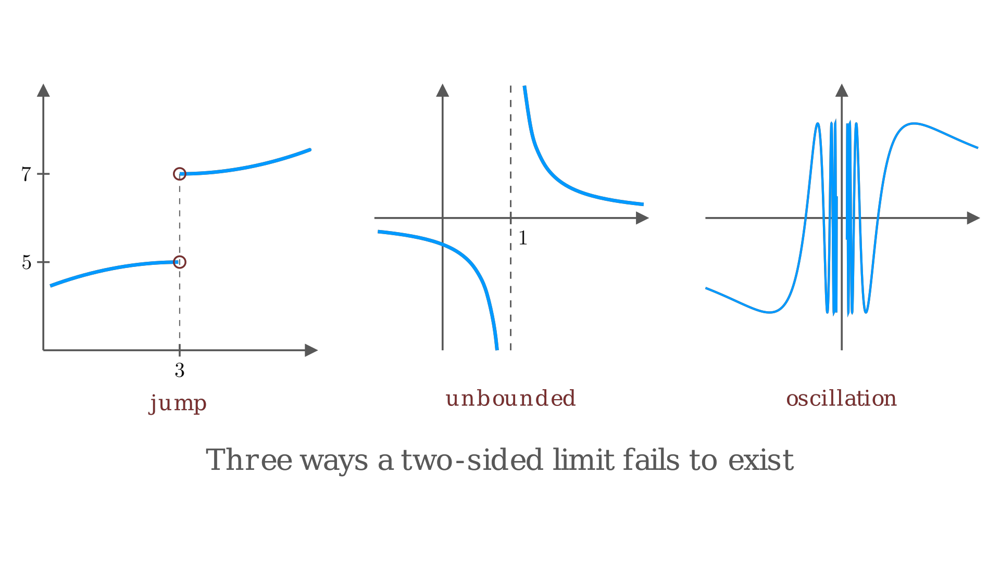
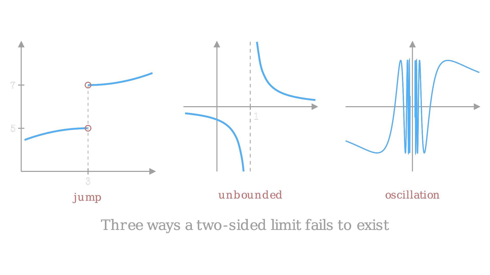
Reading limits from a graph requires careful attention to what the $y$-values approach, not just where the point is plotted.从图像读取极限时，要仔细观察 $y$ 值趋向何处，而不仅仅是图上画出的点的位置。
analyzing graphs）中的"洞"）、实心圆、跳跃间断与垂直渐近线（vertical asymptote）。当函数无界、函数无限振荡或左右极限不相等时，极限可能不存在。
Worked Example: Reading a Graph with a Hole and a Jump例题：读取含"洞"与跳跃的图像
A graph of $g$ shows an open circle at $(2, 4)$, a filled dot at $(2, 1)$, and the curve rising smoothly toward height $4$ from both sides of $x = 2$. Find $\lim_{x \to 2} g(x)$ and $g(2)$.函数 $g$ 的图像在 $(2, 4)$ 处为空心圆，在 $(2, 1)$ 处为实心点，且曲线从 $x = 2$ 两侧都平滑地趋向高度 $4$。求 $\lim_{x \to 2} g(x)$ 与 $g(2)$。
Step 1: Read each one-sided limit. As $x \to 2^-$ and $x \to 2^+$, the curve approaches height $4$ from both sides.第 1 步：读取每个单侧极限。当 $x \to 2^-$ 与 $x \to 2^+$ 时，曲线从两侧都趋向高度 $4$。
$$\lim_{x \to 2^-} g(x) = 4 \qquad \lim_{x \to 2^+} g(x) = 4$$Step 2: Combine. The one-sided limits agree, so the two-sided limit exists and equals $4$.第 2 步：合并。两个单侧极限相等，故双侧极限存在且等于 $4$。
$$\lim_{x \to 2} g(x) = 4$$Step 3: Read the value separately. The filled dot gives $g(2) = 1$. The limit ($4$) is not the function value ($1$): the graph has a removable discontinuity at $x = 2$.第 3 步：单独读取函数值。实心点给出 $g(2) = 1$。极限（$4$）不等于函数值（$1$）：图像在 $x = 2$ 处为可去间断点。
The Value at the Point Is Irrelevant. When estimating $\lim_{x \to c} f(x)$ from a graph, ignore any filled dot sitting at $x = c$. The limit depends only on the heights the curve approaches from the left and right, never on the plotted value $f(c)$. A single open circle at $(c, L)$ still gives a limit of $L$.
该点处的函数值无关紧要。从图像估计 $\lim_{x \to c} f(x)$ 时，忽略位于 $x = c$ 的任何实心点。极限只取决于曲线从左右两侧所趋向的高度，而与所画出的函数值 $f(c)$ 无关。即使在 $(c, L)$ 处只有一个空心圆，极限仍为 $L$。
Worked Example: Reading One-Sided Limits at Three Breaks例题：读取三处断点的单侧极限
Use Figure 1.1. At $x = 1$, $x = 3$ and $x = 5$, find each one-sided limit, the two-sided limit if it exists, and the function value.利用图 1.1。在 $x = 1$、$x = 3$ 与 $x = 5$ 处，分别求每个单侧极限、双侧极限（若存在）以及函数值。
Step 1: At $x = 1$. Both sides of the line rise toward the open circle at height $2$, so $\lim_{x \to 1^-} f(x) = \lim_{x \to 1^+} f(x) = 2$ and $\lim_{x \to 1} f(x) = 2$. The filled dot gives $f(1) = 4$.第 1 步：在 $x = 1$ 处。直线两侧都趋向高度 $2$ 的空心圆，所以 $\lim_{x \to 1^-} f(x) = \lim_{x \to 1^+} f(x) = 2$，$\lim_{x \to 1} f(x) = 2$。实心点给出 $f(1) = 4$。
Step 2: At $x = 3$. From the left the line approaches the open circle at height $4$; from the right the curve starts at the filled dot at height $1.5$.第 2 步：在 $x = 3$ 处。从左侧，直线趋向高度 $4$ 的空心圆；从右侧，曲线从高度 $1.5$ 的实心点开始。
$$\lim_{x \to 3^-} f(x) = 4 \qquad \lim_{x \to 3^+} f(x) = 1.5 \qquad f(3) = 1.5$$Since $4 \neq 1.5$, $\lim_{x \to 3} f(x)$ does not exist.由于 $4 \neq 1.5$，$\lim_{x \to 3} f(x)$ 不存在。
Step 3: At $x = 5$. The left branch rises without bound and the right branch falls without bound: $\lim_{x \to 5^-} f(x) = +\infty$ and $\lim_{x \to 5^+} f(x) = -\infty$. The limit does not exist and $f(5)$ is undefined.第 3 步：在 $x = 5$ 处。左支无界上升，右支无界下降：$\lim_{x \to 5^-} f(x) = +\infty$，$\lim_{x \to 5^+} f(x) = -\infty$。极限不存在，且 $f(5)$ 无定义。
Why this works: each one-sided limit is read from the heights the curve approaches, and the two-sided limit exists only when those heights match.原理：每个单侧极限都由曲线所趋向的高度读出，只有两侧高度一致时双侧极限才存在。
1. In Figure 1.1, what is $\lim_{x \to 3^+} f(x)$?1. 在图 1.1 中，$\lim_{x \to 3^+} f(x)$ 是多少？
$1.5$. The right-hand branch starts at the filled dot $(3, 1.5)$ and the heights just to the right of $3$ approach $1.5$.
$1.5$。右支从实心点 $(3, 1.5)$ 开始，$3$ 右侧附近的高度趋于 $1.5$。
2. In Figure 1.1, is $\lim_{x \to 1} f(x)$ equal to $f(1)$?2. 在图 1.1 中，$\lim_{x \to 1} f(x)$ 等于 $f(1)$ 吗？
No. The limit is $2$ (the height of the open circle) but $f(1) = 4$ (the filled dot).
不等于。极限是 $2$（空心圆的高度），而 $f(1) = 4$（实心点）。
3. Why does $\lim_{x \to 0} \sin\!\left(\frac{1}{x}\right)$ not exist, even though the function is bounded?3. 为什么 $\lim_{x \to 0} \sin\!\left(\frac{1}{x}\right)$ 不存在，尽管函数有界？
As $x \to 0$, $\frac{1}{x}$ grows without bound, so $\sin\!\left(\frac{1}{x}\right)$ passes through every value from $-1$ to $1$ infinitely often. It never settles near one number, so no limit exists.
当 $x \to 0$ 时，$\frac{1}{x}$ 无界增大，所以 $\sin\!\left(\frac{1}{x}\right)$ 无限次取遍 $-1$ 到 $1$ 之间的每个值。它从不稳定在某一个数附近，因此极限不存在。
Estimating Limit Values from Tables由表格估计极限值
- Estimate a limit from a table using inputs on both sides of $c$.
- Decide that a limit does not exist when the left and right estimates differ.
- Explain why a table can suggest a limit but cannot prove it.
- Choose calculator inputs close to $c$ (for example $c \pm 0.001$) when building a table.
- Confirm a table estimate analytically when a formula is available.
- 利用 $c$ 两侧的输入，由表格估计极限。
- 当左右两侧估计值不同时，判定极限不存在。
- 解释为什么表格只能提示极限，而不能证明极限。
- 用计算器列表时选择接近 $c$ 的输入（例如 $c \pm 0.001$）。
- 有公式时，用解析方法确认表格估计值。
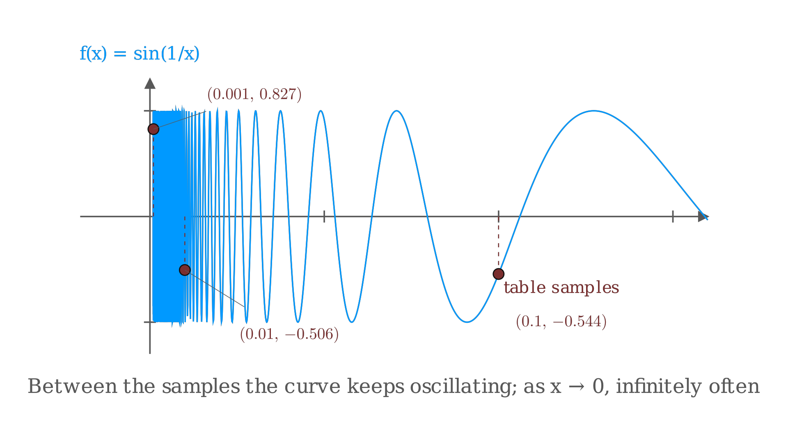
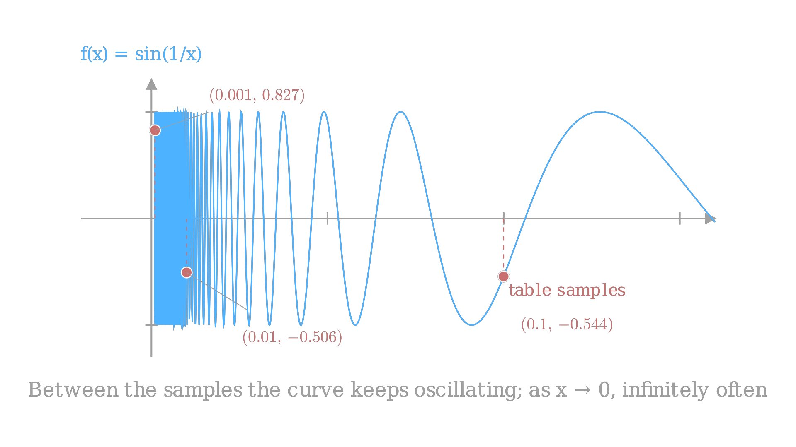
Worked Example: Estimating from a Table例题：由表格估计极限
Estimate $\displaystyle\lim_{x \to 2} \frac{x^2 - 4}{x - 2}$估计 $\displaystyle\lim_{x \to 2} \frac{x^2 - 4}{x - 2}$
| $x$ | 1.9 | 1.99 | 1.999 | 2.001 | 2.01 | 2.1 |
| $f(x)$ | 3.9 | 3.99 | 3.999 | 4.001 | 4.01 | 4.1 |
From the left: $f(x) \to 4$. From the right: $f(x) \to 4$.从左侧：$f(x) \to 4$。从右侧：$f(x) \to 4$。
$$\therefore \lim_{x \to 2} \frac{x^2 - 4}{x - 2} = 4$$When building a table on your calculator, choose values on both sides of $c$ that are very close to $c$ (like $c \pm 0.001$). Be careful about rounding: don't declare a limit based on values that are far from $c$.
用计算器列表时，在 $c$ 的两侧都选取与 $c$ 非常接近的值（例如 $c \pm 0.001$）。注意四舍五入：不要根据离 $c$ 较远的值就断定极限值。
Worked Example: When a Table Suggests DNE例题：当表格显示极限不存在
A table for $f$ near $x = 0$ shows the values below. Estimate $\lim_{x \to 0} f(x)$.$f$ 在 $x = 0$ 附近的表格取值如下。估计 $\lim_{x \to 0} f(x)$。
| $x$ | -0.1 | -0.01 | 0.01 | 0.1 |
| $f(x)$ | -1.98 | -1.999 | 3.001 | 3.02 |
Step 1: Read each side. From the left the values approach $-2$; from the right they approach $3$.第 1 步：分别读取两侧。从左侧取值趋于 $-2$；从右侧取值趋于 $3$。
$$\lim_{x \to 0^-} f(x) \approx -2 \qquad \lim_{x \to 0^+} f(x) \approx 3$$Step 2: Compare. The one-sided estimates disagree ($-2 \neq 3$), so the two-sided limit does not exist. A table is enough to reveal this: you do not need a formula.第 2 步：比较。两侧的估计值不一致（$-2 \neq 3$），故双侧极限不存在。仅凭表格即可看出这一点：不需要公式。
1. A table gives $f(0.9) = 2.61$, $f(0.99) = 2.9601$, $f(1.01) = 3.0401$, $f(1.1) = 3.41$. Estimate $\lim_{x \to 1} f(x)$.1. 表格给出 $f(0.9) = 2.61$，$f(0.99) = 2.9601$，$f(1.01) = 3.0401$，$f(1.1) = 3.41$。估计 $\lim_{x \to 1} f(x)$。
From the left the values rise toward $3$ and from the right they fall toward $3$, so the estimate is $3$. (These are the values of $x^2 + 2x$, and $1 + 2 = 3$ confirms it.)
左侧的值向 $3$ 上升，右侧的值向 $3$ 下降，所以估计值为 $3$。（这些是 $x^2 + 2x$ 的值，$1 + 2 = 3$ 予以确认。）
2. For $f(x) = \frac{\sin x}{x}$, $f(\pm 0.1) \approx 0.99833$ and $f(\pm 0.01) \approx 0.99998$. Estimate $\lim_{x \to 0} f(x)$.2. 对 $f(x) = \frac{\sin x}{x}$，$f(\pm 0.1) \approx 0.99833$，$f(\pm 0.01) \approx 0.99998$。估计 $\lim_{x \to 0} f(x)$。
Both sides give the same values (the function is even) and they approach $1$, so the estimate is $1$, which matches the known limit $\lim_{x \to 0} \frac{\sin x}{x} = 1$.
两侧取值相同（该函数是偶函数），且都趋于 $1$，所以估计值为 $1$，与已知极限 $\lim_{x \to 0} \frac{\sin x}{x} = 1$ 一致。
3. Let $g(x) = \sin\!\left(\frac{\pi}{x}\right)$. A table shows $g(0.1) = g(0.01) = g(0.001) = 0$. Does this prove $\lim_{x \to 0^+} g(x) = 0$?3. 设 $g(x) = \sin\!\left(\frac{\pi}{x}\right)$。表格显示 $g(0.1) = g(0.01) = g(0.001) = 0$。这能证明 $\lim_{x \to 0^+} g(x) = 0$ 吗？
No. Those inputs give $\sin(10\pi)$, $\sin(100\pi)$ and $\sin(1000\pi)$, which are all $0$, but at $x = \frac{2}{5}, \frac{2}{9}, \frac{2}{13}, \ldots$ the value is $1$. The function oscillates between $-1$ and $1$, so the limit does not exist.
不能。这些输入给出 $\sin(10\pi)$、$\sin(100\pi)$ 与 $\sin(1000\pi)$，都等于 $0$；但在 $x = \frac{2}{5}, \frac{2}{9}, \frac{2}{13}, \ldots$ 处函数值为 $1$。函数在 $-1$ 与 $1$ 之间振荡，所以极限不存在。
Determining Limits Using Algebraic Properties of Limits利用极限的代数性质求极限
- State the sum, difference, constant-multiple, product, quotient and power laws for limits.
- Calculate limits of polynomials, and of rational functions whose denominator is nonzero, by direct substitution.
- Calculate the limit of a combination of functions from given limits.
- Explain why the quotient law fails when the denominator's limit is $0$.
- Justify each step of a limit calculation by naming the law used.
- 写出极限的和、差、常数倍、积、商与幂法则。
- 用直接代入求多项式以及分母非零的有理函数的极限。
- 由已知极限计算函数组合的极限。
- 解释为什么分母极限为 $0$ 时商法则失效。
- 在计算极限的每一步注明所用的法则。
direct substitution）求极限。优先尝试直接代入：若结果是实数即可结束。
Worked Example: Using Limit Laws例题：使用极限法则
Find $\displaystyle\lim_{x \to 3}\bigl[2x^2 + 5x - 1\bigr]$.求 $\displaystyle\lim_{x \to 3}\bigl[2x^2 + 5x - 1\bigr]$。
This is a polynomial: use direct substitution:该式为多项式：直接代入：
$$\begin{aligned} &= 2(3)^2 + 5(3) - 1 \\ &= 2(9) + 15 - 1 \\ &= 18 + 15 - 1 \\ &= 32 \end{aligned}$$Worked Example: Chaining Several Limit Laws例题：串联使用多条极限法则
Find $\displaystyle\lim_{x \to 4} \frac{\sqrt{x} + 3}{x - 1}$ using the limit laws, naming each law you use.利用极限法则求 $\displaystyle\lim_{x \to 4} \frac{\sqrt{x} + 3}{x - 1}$，并指出每一步所用的法则。
Step 1: Check the denominator. At $x = 4$, the denominator is $4 - 1 = 3 \neq 0$, so the quotient law applies (no indeterminate form).第 1 步：检查分母。当 $x = 4$ 时，分母为 $4 - 1 = 3 \neq 0$，故可用商法则（无不定式）。
Step 2: Evaluate numerator and denominator separately.第 2 步：分别求分子与分母的极限。
$$\begin{aligned} \lim_{x \to 4}(\sqrt{x} + 3) &= \sqrt{4} + 3 = 5 \qquad \text{(sum and root laws)} \\[4pt] \lim_{x \to 4}(x - 1) &= 4 - 1 = 3 \qquad \text{(difference law)} \end{aligned}$$Step 3: Apply the quotient law.第 3 步：应用商法则。
$$\lim_{x \to 4} \frac{\sqrt{x} + 3}{x - 1} = \frac{5}{3}$$Substitute the given limits, then check the denominator. When you are given values such as $\lim f(x) = 3$ and $\lim g(x) = -1$, write the expression with those numbers in place before simplifying, and check that every denominator has a nonzero limit. If a denominator's limit is $0$, the quotient law does not apply and you need another method, such as factoring.
先代入已知极限，再检查分母。题目给出 $\lim f(x) = 3$、$\lim g(x) = -1$ 这类数值时，先把这些数代入表达式再化简，并检查每个分母的极限都不为零。若某个分母的极限为 $0$，商法则不适用，需要换用其他方法，例如因式分解。
1. Given $\lim_{x \to 2} f(x) = 3$ and $\lim_{x \to 2} g(x) = -1$, find $\lim_{x \to 2} \dfrac{2f(x) - [g(x)]^2}{f(x) + g(x)}$.1. 已知 $\lim_{x \to 2} f(x) = 3$，$\lim_{x \to 2} g(x) = -1$，求 $\lim_{x \to 2} \dfrac{2f(x) - [g(x)]^2}{f(x) + g(x)}$。
The denominator's limit is $3 + (-1) = 2 \neq 0$, so the quotient law applies: $\dfrac{2(3) - (-1)^2}{2} = \dfrac{6 - 1}{2} = \dfrac{5}{2}$.
分母的极限为 $3 + (-1) = 2 \neq 0$，可用商法则：$\dfrac{2(3) - (-1)^2}{2} = \dfrac{6 - 1}{2} = \dfrac{5}{2}$。
2. Find $\lim_{x \to -1} (x^3 - 2x + 4)$.2. 求 $\lim_{x \to -1} (x^3 - 2x + 4)$。
It is a polynomial, so substitute: $(-1)^3 - 2(-1) + 4 = -1 + 2 + 4 = 5$.
这是多项式，直接代入：$(-1)^3 - 2(-1) + 4 = -1 + 2 + 4 = 5$。
3. Can you use the quotient law directly on $\lim_{x \to 1} \dfrac{x^2 - 1}{x - 1}$? If not, find the limit another way.3. 能否直接对 $\lim_{x \to 1} \dfrac{x^2 - 1}{x - 1}$ 使用商法则？若不能，用其他方法求出极限。
No: the denominator's limit is $0$. Factor instead: $\dfrac{(x-1)(x+1)}{x-1} = x + 1$ for $x \neq 1$, so the limit is $1 + 1 = 2$.
不能：分母的极限为 $0$。改用因式分解：当 $x \neq 1$ 时 $\dfrac{(x-1)(x+1)}{x-1} = x + 1$，所以极限为 $1 + 1 = 2$。
Determining Limits Using Algebraic Manipulation通过代数变形求极限
- Recognise $\frac{0}{0}$ as an indeterminate form that needs more work.
- Calculate limits by factoring and cancelling a common factor.
- Calculate limits by multiplying by a conjugate to remove a radical.
- Simplify a complex fraction before taking a limit.
- Explain why cancelling a factor is valid when $x \neq c$.
- 认识到 $\frac{0}{0}$ 是需要进一步处理的不定式。
- 通过因式分解并约去公因式求极限。
- 通过乘以共轭式消去根号求极限。
- 求极限前先化简繁分式。
- 解释为什么在 $x \neq c$ 时约去因式是合理的。
When direct substitution gives $\frac{0}{0}$ (an indeterminate form), algebraic manipulation is needed to simplify the expression before re-attempting substitution.当直接代入得到 $\frac{0}{0}$，即不定式（indeterminate form）时，需要先做代数变形化简，再重新代入。
Worked Example: Factoring例题：因式分解
Find $\displaystyle\lim_{x \to 3} \frac{x^2 - 9}{x - 3}$.求 $\displaystyle\lim_{x \to 3} \frac{x^2 - 9}{x - 3}$。
Direct substitution gives $\frac{9-9}{3-3} = \frac{0}{0}$: indeterminate. Factor the numerator:直接代入得到 $\frac{9-9}{3-3} = \frac{0}{0}$，为不定式。对分子做因式分解：
$$\begin{aligned} &= \lim_{x \to 3} \frac{(x-3)(x+3)}{x-3} \\[4pt] &= \lim_{x \to 3} (x+3) \qquad\text{(cancel } x-3\text{)} \\[4pt] &= 3 + 3 = 6 \end{aligned}$$Worked Example: Conjugate例题：共轭相乘
Find $\displaystyle\lim_{x \to 0} \frac{\sqrt{x+4} - 2}{x}$.求 $\displaystyle\lim_{x \to 0} \frac{\sqrt{x+4} - 2}{x}$。
Direct substitution gives $\frac{0}{0}$: multiply by the conjugate:直接代入得到 $\frac{0}{0}$，乘以共轭式：
$$\begin{aligned} &= \lim_{x \to 0} \frac{(\sqrt{x+4}-2)(\sqrt{x+4}+2)}{x(\sqrt{x+4}+2)} \\[4pt] &= \lim_{x \to 0} \frac{(x+4)-4}{x(\sqrt{x+4}+2)} \\[4pt] &= \lim_{x \to 0} \frac{x}{x(\sqrt{x+4}+2)} \\[4pt] &= \lim_{x \to 0} \frac{1}{\sqrt{x+4}+2} \\[4pt] &= \frac{1}{\sqrt{4}+2} = \frac{1}{4} \end{aligned}$$Worked Example: Simplifying a Complex Fraction例题：化简繁分式
Find $\displaystyle\lim_{x \to 0} \frac{\frac{1}{x + 3} - \frac{1}{3}}{x}$.求 $\displaystyle\lim_{x \to 0} \frac{\frac{1}{x + 3} - \frac{1}{3}}{x}$。
Step 1: Identify the form. Direct substitution gives $\frac{0}{0}$, so simplify first.第 1 步：判别形式。直接代入得 $\frac{0}{0}$，故先化简。
Step 2: Combine the top fractions over the common denominator $3(x+3)$:第 2 步：将分子两项通分，公分母为 $3(x+3)$：
$$\frac{1}{x+3} - \frac{1}{3} = \frac{3 - (x+3)}{3(x+3)} = \frac{-x}{3(x+3)}$$Step 3: Divide by $x$ (multiply by $\frac{1}{x}$) and cancel:第 3 步：除以 $x$（即乘 $\frac{1}{x}$）并约分：
$$\frac{-x}{3(x+3)} \cdot \frac{1}{x} = \frac{-1}{3(x+3)}$$Step 4: Substitute.第 4 步：代入。
$$\lim_{x \to 0} \frac{-1}{3(x+3)} = \frac{-1}{3(3)} = -\frac{1}{9}$$Keep the limit symbol until you substitute. Write "direct substitution gives the indeterminate form $\frac{0}{0}$" rather than "$= \frac{0}{0}$", because $\frac{0}{0}$ is not a value. Keep $\lim_{x \to c}$ on every line of the simplification and drop it only on the line where you substitute; without it the middle lines are false equations.
代入之前保留极限符号。写“直接代入得到不定式 $\frac{0}{0}$”，而不要写“$= \frac{0}{0}$”，因为 $\frac{0}{0}$ 不是一个值。化简的每一行都保留 $\lim_{x \to c}$，只在代入的那一行去掉；否则中间各行就是错误的等式。
1. Find $\lim_{x \to 4} \dfrac{x - 4}{\sqrt{x} - 2}$.1. 求 $\lim_{x \to 4} \dfrac{x - 4}{\sqrt{x} - 2}$。
Substitution gives $\frac{0}{0}$. Multiply by the conjugate: $\dfrac{(x-4)(\sqrt{x} + 2)}{x - 4} = \sqrt{x} + 2$ for $x \neq 4$, so the limit is $2 + 2 = 4$.
代入得 $\frac{0}{0}$。乘以共轭式：当 $x \neq 4$ 时 $\dfrac{(x-4)(\sqrt{x} + 2)}{x - 4} = \sqrt{x} + 2$，所以极限为 $2 + 2 = 4$。
2. Find $\lim_{x \to -2} \dfrac{x^2 + 5x + 6}{x + 2}$.2. 求 $\lim_{x \to -2} \dfrac{x^2 + 5x + 6}{x + 2}$。
$x^2 + 5x + 6 = (x+2)(x+3)$, so for $x \neq -2$ the expression is $x + 3$, and the limit is $-2 + 3 = 1$.
$x^2 + 5x + 6 = (x+2)(x+3)$，所以当 $x \neq -2$ 时表达式等于 $x + 3$，极限为 $-2 + 3 = 1$。
3. Find $\lim_{h \to 0} \dfrac{(2+h)^2 - 4}{h}$ and say what it measures.3. 求 $\lim_{h \to 0} \dfrac{(2+h)^2 - 4}{h}$，并说明它表示什么。
$(2+h)^2 - 4 = 4h + h^2$, so the quotient is $4 + h$ for $h \neq 0$ and the limit is $4$. It is the instantaneous rate of change of $x^2$ at $x = 2$.
$(2+h)^2 - 4 = 4h + h^2$，所以当 $h \neq 0$ 时商为 $4 + h$，极限为 $4$。它是 $x^2$ 在 $x = 2$ 处的瞬时变化率。
Selecting Procedures for Determining Limits选择求极限的方法
- Classify a limit by the form direct substitution gives: a number, $\frac{0}{0}$, or $\frac{k}{0}$ with $k \neq 0$.
- Select factoring, the conjugate, a trigonometric identity or a special trig limit for a $\frac{0}{0}$ form.
- Deduce that a $\frac{k}{0}$ form needs one-sided sign analysis.
- Select division by the highest power of $x$ for a limit at infinity.
- Justify the choice of method before carrying it out.
- 按直接代入所得的形式对极限分类：一个数、$\frac{0}{0}$，或 $\frac{k}{0}$（$k \neq 0$）。
- 对 $\frac{0}{0}$ 型选择因式分解、共轭式、三角恒等式或特殊三角极限。
- 推断 $\frac{k}{0}$ 型需要做单侧符号分析。
- 对无穷处的极限选择“除以 $x$ 的最高次幂”。
- 在动手计算前说明选择该方法的理由。
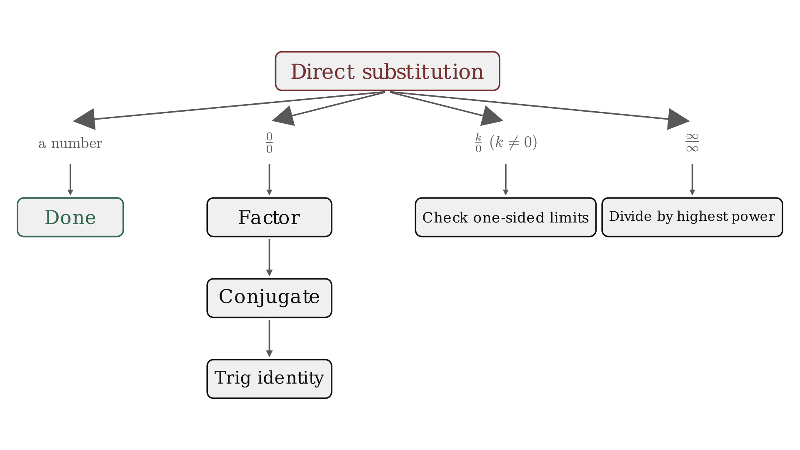
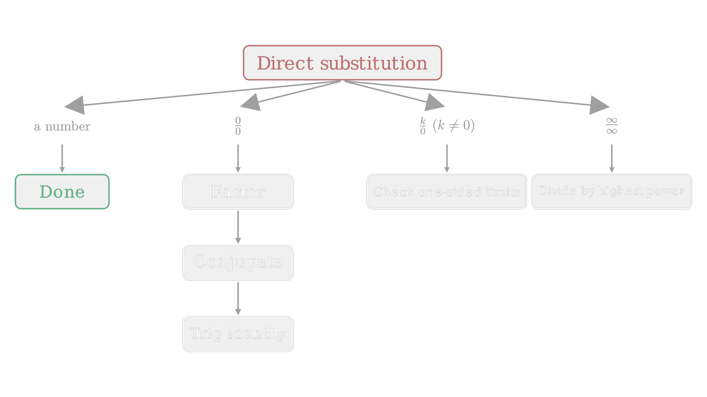
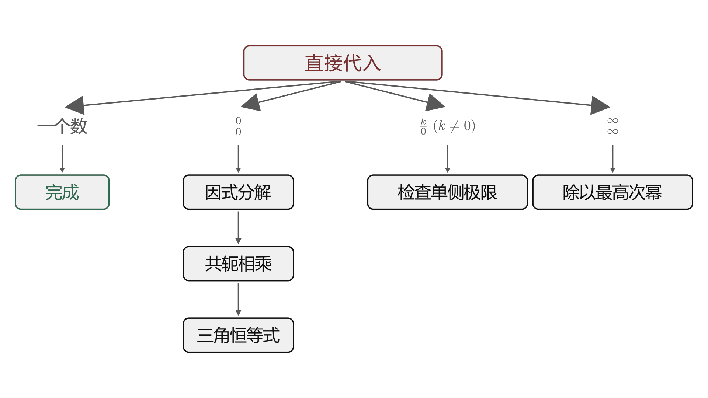
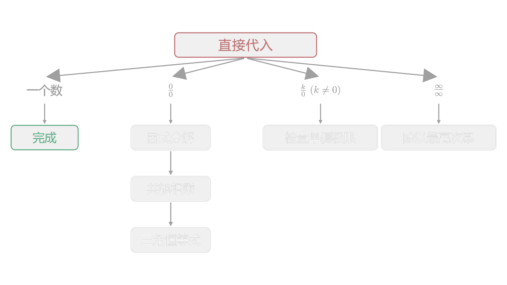
Step 2: If you get $\frac{0}{0}$, try: factoring → conjugate → trig identities → L'Hôpital's (if learned).
Step 3: If you get $\frac{k}{0}$ (where $k \neq 0$), the limit is $\pm \infty$ or DNE: check one-sided limits.
Step 4: If the form is $\frac{\infty}{\infty}$, divide by the highest power of $x$ in the denominator. 第 1 步：先尝试直接代入。若得到一个数，即可结束。
第 2 步：若得到 $\frac{0}{0}$，依次尝试：因式分解 → 共轭相乘 → 三角恒等式 → 洛必达法则（
L'Hôpital，若已学）。第 3 步：若得到 $\frac{k}{0}$（$k \neq 0$），极限为 $\pm \infty$ 或不存在：需检查单侧极限。
第 4 步：若为 $\frac{\infty}{\infty}$ 型，可同时除以分母中 $x$ 的最高次幂。
Topic 1.7 is about choosing the right technique, not only executing it. Classify every limit problem before you start any algebra. Ask yourself: "What form does direct substitution give me?"
专题 1.7 的重点是选择合适的方法，而不仅仅是执行。动手做代数运算之前，先对每道极限题分类。问自己："直接代入得到什么形式？"
Worked Example: Choosing a Procedure for a $\frac{k}{0}$ Form例题：为 $\frac{k}{0}$ 型选择方法
Determine $\displaystyle\lim_{x \to 3} \frac{x + 2}{x - 3}$.求 $\displaystyle\lim_{x \to 3} \frac{x + 2}{x - 3}$。
Step 1: Substitute to classify the form. The numerator $\to 5$ and the denominator $\to 0$, giving $\frac{5}{0}$: a nonzero-over-zero form. This is not $\frac{0}{0}$, so do not factor; the limit is infinite or DNE.第 1 步：代入以判别形式。分子 $\to 5$，分母 $\to 0$，得 $\frac{5}{0}$：非零比零型。它不是 $\frac{0}{0}$，故不应因式分解；极限为无穷或不存在。
Step 2: Test each side with a sign analysis.第 2 步：用符号分析检验两侧。
$$\lim_{x \to 3^-} \frac{x+2}{x-3} = \frac{5}{0^-} = -\infty \qquad \lim_{x \to 3^+} \frac{x+2}{x-3} = \frac{5}{0^+} = +\infty$$Step 3: Conclude. The one-sided limits disagree ($-\infty$ vs $+\infty$), so the two-sided limit does not exist, and $x = 3$ is a vertical asymptote.第 3 步：下结论。两个单侧极限不一致（$-\infty$ 与 $+\infty$），故双侧极限不存在，且 $x = 3$ 为垂直渐近线。
Worked Example: Two Routes for a Radical例题：含根号的两种解法
Find $\displaystyle\lim_{x \to 9} \frac{x - 9}{\sqrt{x} - 3}$.求 $\displaystyle\lim_{x \to 9} \frac{x - 9}{\sqrt{x} - 3}$。
Step 1: Classify. Substitution gives $\frac{9 - 9}{3 - 3} = \frac{0}{0}$, and there is a radical, so a conjugate is a natural choice.第 1 步：分类。代入得 $\frac{9 - 9}{3 - 3} = \frac{0}{0}$，且含根号，所以自然选择共轭式。
Step 2: Route A (conjugate).第 2 步：方法 A（共轭式）。
$$\lim_{x \to 9} \frac{(x - 9)(\sqrt{x} + 3)}{(\sqrt{x} - 3)(\sqrt{x} + 3)} = \lim_{x \to 9} \frac{(x - 9)(\sqrt{x} + 3)}{x - 9} = \lim_{x \to 9} (\sqrt{x} + 3) = 6$$Step 3: Route B (factor as a difference of squares). For $x \ge 0$, $x - 9 = (\sqrt{x} - 3)(\sqrt{x} + 3)$, so the quotient is $\sqrt{x} + 3$ for $x \neq 9$, and the limit is again $3 + 3 = 6$.第 3 步：方法 B（看成平方差分解）。当 $x \ge 0$ 时 $x - 9 = (\sqrt{x} - 3)(\sqrt{x} + 3)$，所以当 $x \neq 9$ 时商为 $\sqrt{x} + 3$，极限同样为 $3 + 3 = 6$。
Why this works: both routes remove the factor that makes the denominator $0$; any valid route gives the same limit.原理：两种方法都消去了使分母为 $0$ 的因式；任何正确的方法都会得到同一个极限。
1. Which method fits $\lim_{x \to 0} \dfrac{1 - \cos x}{x}$, and what is the limit?1. $\lim_{x \to 0} \dfrac{1 - \cos x}{x}$ 适合用什么方法？极限是多少？
Substitution gives $\frac{0}{0}$ with trig functions, so use the special limit $\lim_{x \to 0} \frac{1 - \cos x}{x} = 0$. The limit is $0$.
代入得含三角函数的 $\frac{0}{0}$，所以用特殊极限 $\lim_{x \to 0} \frac{1 - \cos x}{x} = 0$。极限为 $0$。
2. Classify and evaluate $\lim_{x \to 2} \dfrac{x + 1}{(x - 2)^2}$.2. 对 $\lim_{x \to 2} \dfrac{x + 1}{(x - 2)^2}$ 分类并求值。
Substitution gives $\frac{3}{0}$, a $\frac{k}{0}$ form. The denominator $(x-2)^2$ is positive on both sides and the numerator is near $3$, so the quotient grows without bound: the limit is $+\infty$ (the limit does not exist as a real number).
代入得 $\frac{3}{0}$，属于 $\frac{k}{0}$ 型。分母 $(x-2)^2$ 在两侧都为正，分子接近 $3$，所以商无界增大：极限为 $+\infty$（作为实数，极限不存在）。
3. Evaluate $\lim_{x \to 1} \dfrac{\sqrt{x + 3} - 2}{x - 1}$.3. 求 $\lim_{x \to 1} \dfrac{\sqrt{x + 3} - 2}{x - 1}$。
Substitution gives $\frac{0}{0}$. Multiply by $\sqrt{x + 3} + 2$: the numerator becomes $(x + 3) - 4 = x - 1$, leaving $\dfrac{1}{\sqrt{x + 3} + 2}$. At $x = 1$ this is $\dfrac{1}{2 + 2} = \dfrac{1}{4}$.
代入得 $\frac{0}{0}$。乘以 $\sqrt{x + 3} + 2$：分子变为 $(x + 3) - 4 = x - 1$，剩下 $\dfrac{1}{\sqrt{x + 3} + 2}$。在 $x = 1$ 处为 $\dfrac{1}{2 + 2} = \dfrac{1}{4}$。
Determining Limits Using the Squeeze Theorem利用夹逼定理求极限
- State the Squeeze Theorem and all of its hypotheses.
- Build upper and lower bounds from $-1 \le \sin\theta \le 1$ or $-1 \le \cos\theta \le 1$.
- Calculate limits such as $\lim_{x \to 0} x^2 \sin\!\left(\frac{1}{x}\right)$ with the Squeeze Theorem.
- Use $\lim_{x \to 0} \frac{\sin x}{x} = 1$ and $\lim_{x \to 0} \frac{1 - \cos x}{x} = 0$.
- Rewrite $\frac{\sin(kx)}{x}$ to match the standard form.
- 写出夹逼定理（
Squeeze Theorem）及其全部前提。 - 由 $-1 \le \sin\theta \le 1$ 或 $-1 \le \cos\theta \le 1$ 构造上下界。
- 用夹逼定理计算 $\lim_{x \to 0} x^2 \sin\!\left(\frac{1}{x}\right)$ 这类极限。
- 运用 $\lim_{x \to 0} \frac{\sin x}{x} = 1$ 与 $\lim_{x \to 0} \frac{1 - \cos x}{x} = 0$。
- 把 $\frac{\sin(kx)}{x}$ 改写成标准形式。
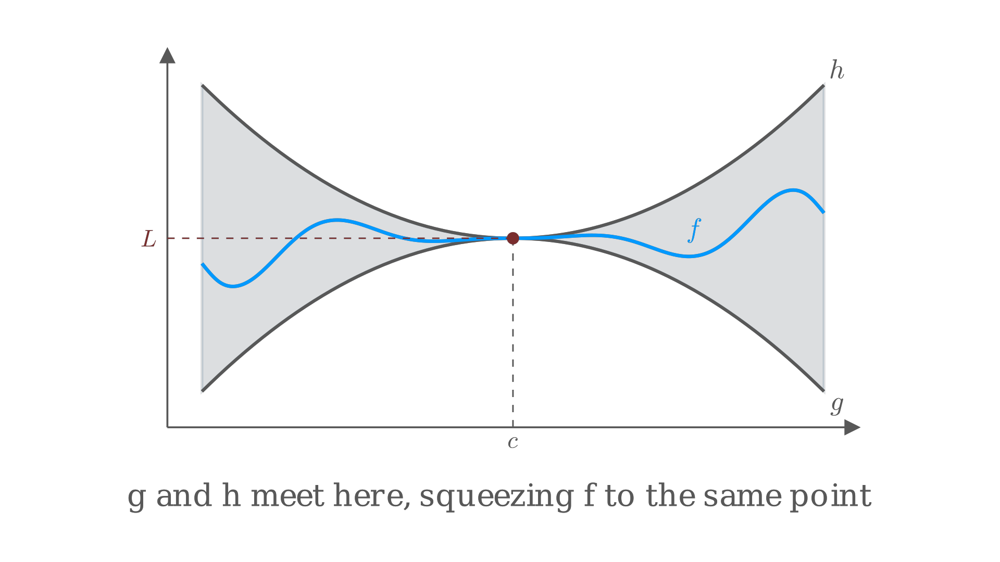
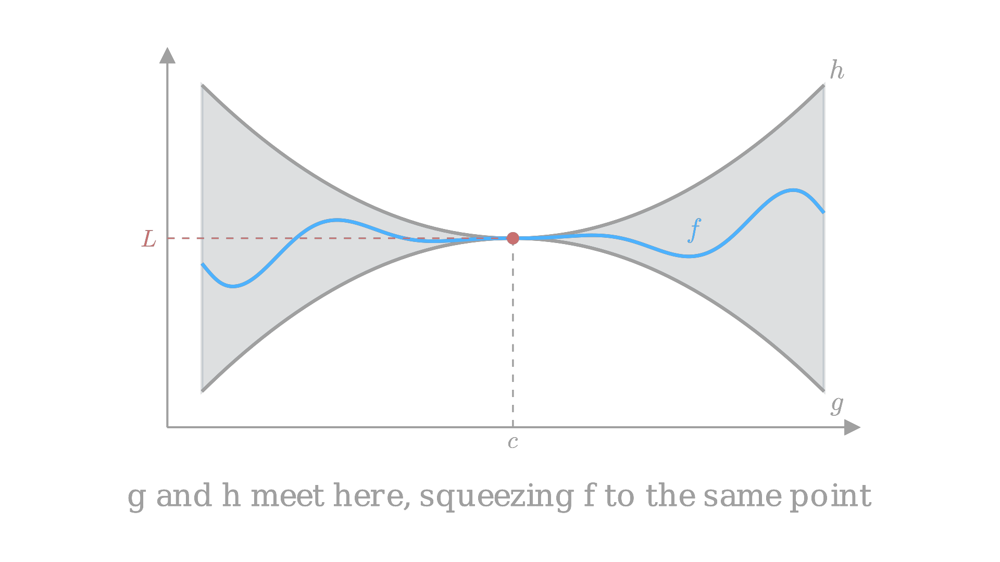
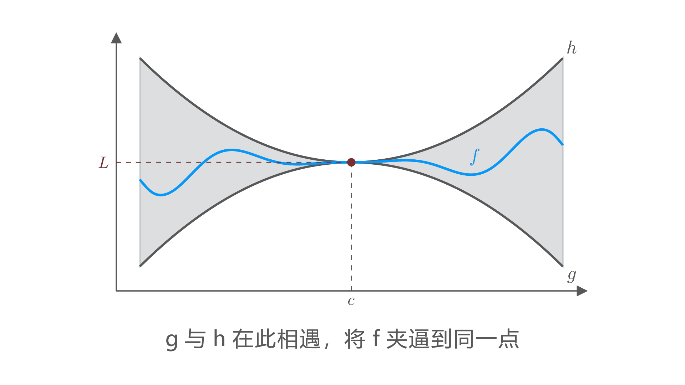
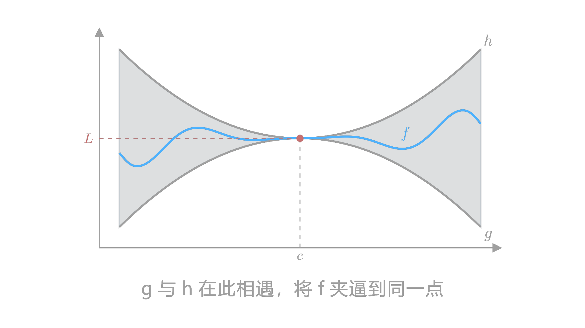
$\displaystyle\lim_{x \to 0} \frac{\sin x}{x} = 1$ $\displaystyle\lim_{x \to 0} \frac{1 - \cos x}{x} = 0$ 下面两个极限可由夹逼定理（
squeeze theorem）证明，在整门课程中反复使用：$\displaystyle\lim_{x \to 0} \frac{\sin x}{x} = 1$ $\displaystyle\lim_{x \to 0} \frac{1 - \cos x}{x} = 0$
Worked Example: Squeeze Theorem例题：夹逼定理
Show that $\displaystyle\lim_{x \to 0} x^2 \sin\!\left(\tfrac{1}{x}\right) = 0$.证明 $\displaystyle\lim_{x \to 0} x^2 \sin\!\left(\tfrac{1}{x}\right) = 0$。
We know $-1 \le \sin(1/x) \le 1$ for all $x \neq 0$. Multiply through by $x^2 \ge 0$:已知对所有 $x \neq 0$，$-1 \le \sin(1/x) \le 1$。整体乘以 $x^2 \ge 0$：
$$-x^2 \;\le\; x^2 \sin\!\left(\tfrac{1}{x}\right) \;\le\; x^2$$Since $\lim_{x \to 0}(-x^2) = 0$ and $\lim_{x \to 0} x^2 = 0$, by the Squeeze Theorem:由于 $\lim_{x \to 0}(-x^2) = 0$ 且 $\lim_{x \to 0} x^2 = 0$，由夹逼定理：
$$\lim_{x \to 0} x^2 \sin\!\left(\tfrac{1}{x}\right) = 0$$Worked Example: Using sin(x)/x例题：使用 sin(x)/x
Find $\displaystyle\lim_{x \to 0} \frac{\sin(3x)}{5x}$.求 $\displaystyle\lim_{x \to 0} \frac{\sin(3x)}{5x}$。
Rewrite to match the standard form $\frac{\sin u}{u} \to 1$:改写以匹配标准形式 $\frac{\sin u}{u} \to 1$：
$$\begin{aligned} &= \lim_{x \to 0} \frac{\sin(3x)}{3x} \cdot \frac{3x}{5x} \\[4pt] &= \lim_{x \to 0} \frac{\sin(3x)}{3x} \cdot \frac{3}{5} \\[4pt] &= 1 \cdot \frac{3}{5} = \frac{3}{5} \end{aligned}$$Worked Example: Squeeze with a Bounded Cosine例题：利用有界余弦的夹逼
Find $\displaystyle\lim_{x \to 0} x\cos\!\left(\frac{1}{x^2}\right)$.求 $\displaystyle\lim_{x \to 0} x\cos\!\left(\frac{1}{x^2}\right)$。
Step 1: Bound the oscillating factor. For all $x \neq 0$, $-1 \le \cos\!\left(\frac{1}{x^2}\right) \le 1$.第 1 步：对振荡因子定界。对所有 $x \neq 0$，$-1 \le \cos\!\left(\frac{1}{x^2}\right) \le 1$。
Step 2: Bound the absolute value. $\left|x\cos\!\left(\frac{1}{x^2}\right)\right| = |x| \cdot \left|\cos\!\left(\frac{1}{x^2}\right)\right| \le |x|$, which is the same as:第 2 步：对绝对值定界。$\left|x\cos\!\left(\frac{1}{x^2}\right)\right| = |x| \cdot \left|\cos\!\left(\frac{1}{x^2}\right)\right| \le |x|$，即：
$$-|x| \;\le\; x\cos\!\left(\frac{1}{x^2}\right) \;\le\; |x|$$Step 3: Squeeze. Both $\lim_{x \to 0}(-|x|) = 0$ and $\lim_{x \to 0}|x| = 0$, so by the Squeeze Theorem the middle limit is $0$.第 3 步：夹逼。由于 $\lim_{x \to 0}(-|x|) = 0$ 且 $\lim_{x \to 0}|x| = 0$，由夹逼定理，中间的极限为 $0$。
$$\lim_{x \to 0} x\cos\!\left(\frac{1}{x^2}\right) = 0$$Write the whole squeeze argument. A complete squeeze argument has three parts: the inequality chain, the limit of each outer function, and the name of the theorem. Make sure the bounds hold for every $x$ near $c$ (other than $c$). Multiplying $-1 \le \sin\!\left(\frac{1}{x}\right) \le 1$ by $x$ keeps the inequality only for $x > 0$, which is why bounds such as $x^2$ or $|x|$ are used.
写出完整的夹逼论证。完整的夹逼论证包括三部分：不等式链、两个外侧函数各自的极限、定理名称。要确认这些界对 $c$ 附近（$c$ 除外）的每个 $x$ 都成立。把 $-1 \le \sin\!\left(\frac{1}{x}\right) \le 1$ 乘以 $x$，只在 $x > 0$ 时保持不等式方向，所以常用 $x^2$ 或 $|x|$ 这样的界。
1. Find $\lim_{x \to 0} x^4 \cos\!\left(\frac{2}{x}\right)$.1. 求 $\lim_{x \to 0} x^4 \cos\!\left(\frac{2}{x}\right)$。
Since $-1 \le \cos\!\left(\frac{2}{x}\right) \le 1$ and $x^4 \ge 0$, we have $-x^4 \le x^4 \cos\!\left(\frac{2}{x}\right) \le x^4$. Both bounds tend to $0$, so by the Squeeze Theorem the limit is $0$.
因为 $-1 \le \cos\!\left(\frac{2}{x}\right) \le 1$ 且 $x^4 \ge 0$，所以 $-x^4 \le x^4 \cos\!\left(\frac{2}{x}\right) \le x^4$。两个界都趋于 $0$，由夹逼定理，极限为 $0$。
2. Find $\lim_{x \to 0} \dfrac{\sin(4x)}{\sin(2x)}$.2. 求 $\lim_{x \to 0} \dfrac{\sin(4x)}{\sin(2x)}$。
Write it as $\dfrac{\sin(4x)}{4x} \cdot \dfrac{2x}{\sin(2x)} \cdot \dfrac{4x}{2x}$. The first two factors tend to $1$ and the last is $2$, so the limit is $2$.
改写为 $\dfrac{\sin(4x)}{4x} \cdot \dfrac{2x}{\sin(2x)} \cdot \dfrac{4x}{2x}$。前两个因子都趋于 $1$，最后一个等于 $2$，所以极限为 $2$。
3. Why can you not use the product law on $\lim_{x \to 0} x^2 \sin\!\left(\frac{1}{x}\right)$?3. 为什么不能对 $\lim_{x \to 0} x^2 \sin\!\left(\frac{1}{x}\right)$ 使用乘积法则？
The product law needs both factor limits to exist, and $\lim_{x \to 0} \sin\!\left(\frac{1}{x}\right)$ does not exist. The Squeeze Theorem avoids that limit by using only the bound $|\sin| \le 1$.
乘积法则要求两个因子的极限都存在，而 $\lim_{x \to 0} \sin\!\left(\frac{1}{x}\right)$ 不存在。夹逼定理只用到界 $|\sin| \le 1$，从而绕开了这个极限。
Connecting Multiple Representations of Limits联系极限的多种表示
- Translate a limit between a graph, a table, a formula and a verbal description.
- Estimate the same limit consistently from different representations.
- Explain what a limit statement guarantees and what it does not (it says nothing about $f(c)$).
- Check a numerical estimate against an analytic calculation.
- Describe limit behaviour in words using "approaches" rather than "equals".
- 在图像、表格、公式与文字描述之间转换同一个极限。
- 从不同表示方式一致地估计同一个极限。
- 解释极限陈述能保证什么、不能保证什么（它不涉及 $f(c)$）。
- 用解析计算核对数值估计。
- 用“趋近于”而不是“等于”来描述极限行为。
Problems in this topic give a limit in one representation and ask for it in another. Practice: given a table, sketch the graph. Given a graph, write the limit in analytical notation. Given a formula, describe the limit behavior in words.
本专题的题目常用一种表示给出极限，并要求用另一种表示作答。多多练习：给表格，画图像；给图像，用解析记号写极限；给公式，用语言描述极限行为。
Worked Example: One Limit in Four Representations例题：同一个极限的四种表示
Let $f(x) = \dfrac{x^2 + x - 2}{x - 1}$. Describe $\lim_{x \to 1} f(x)$ analytically, numerically, graphically and in words.设 $f(x) = \dfrac{x^2 + x - 2}{x - 1}$。从解析、数值、图像与文字四个方面描述 $\lim_{x \to 1} f(x)$。
Step 1: Analytic. $x^2 + x - 2 = (x + 2)(x - 1)$, so $f(x) = x + 2$ for $x \neq 1$ and $\lim_{x \to 1} f(x) = 3$.第 1 步：解析。$x^2 + x - 2 = (x + 2)(x - 1)$，所以当 $x \neq 1$ 时 $f(x) = x + 2$，$\lim_{x \to 1} f(x) = 3$。
Step 2: Numerical. $f(0.9) = 2.9$, $f(0.99) = 2.99$, $f(1.01) = 3.01$, $f(1.1) = 3.1$: both sides approach $3$.第 2 步：数值。$f(0.9) = 2.9$，$f(0.99) = 2.99$，$f(1.01) = 3.01$，$f(1.1) = 3.1$：两侧都趋于 $3$。
Step 3: Graphical. The graph is the line $y = x + 2$ with an open circle at $(1, 3)$, because $f(1)$ is undefined.第 3 步：图像。图像是直线 $y = x + 2$，在 $(1, 3)$ 处有一个空心圆，因为 $f(1)$ 无定义。
Step 4: Verbal. As $x$ approaches $1$ from either side, $f(x)$ approaches $3$, even though $f(1)$ does not exist.第 4 步：文字。当 $x$ 从任一侧趋于 $1$ 时，$f(x)$ 趋于 $3$，尽管 $f(1)$ 不存在。
Why this works: all four descriptions are views of the same object, so they must agree; a disagreement signals an arithmetic or reading error.原理：四种描述是同一对象的不同视角，必须一致；若不一致，说明计算或读图有误。
Worked Example: Checking a Table Against the Formula例题：用公式核对表格
Let $g(x) = \dfrac{\sqrt{x + 1} - 1}{x}$. Estimate $\lim_{x \to 0} g(x)$ from $g(\pm 0.01)$, then confirm algebraically.设 $g(x) = \dfrac{\sqrt{x + 1} - 1}{x}$。由 $g(\pm 0.01)$ 估计 $\lim_{x \to 0} g(x)$，再用代数方法确认。
Step 1: Table values. $g(-0.01) = \dfrac{\sqrt{0.99} - 1}{-0.01} \approx 0.50126$ and $g(0.01) = \dfrac{\sqrt{1.01} - 1}{0.01} \approx 0.49876$. Both are close to $0.5$.第 1 步：表格值。$g(-0.01) = \dfrac{\sqrt{0.99} - 1}{-0.01} \approx 0.50126$，$g(0.01) = \dfrac{\sqrt{1.01} - 1}{0.01} \approx 0.49876$。两者都接近 $0.5$。
Step 2: Algebra. Multiply by the conjugate:第 2 步：代数。乘以共轭式：
$$\frac{(\sqrt{x + 1} - 1)(\sqrt{x + 1} + 1)}{x(\sqrt{x + 1} + 1)} = \frac{x}{x(\sqrt{x + 1} + 1)} = \frac{1}{\sqrt{x + 1} + 1} \to \frac{1}{2}$$Why this works: the table brackets the limit from both sides and the algebra gives its exact value $\frac{1}{2}$, so the two representations agree.原理：表格从两侧把极限夹在中间，代数给出它的精确值 $\frac{1}{2}$，两种表示一致。
1. Write $\lim_{x \to -2^+} g(x) = 5$ in words.1. 用文字写出 $\lim_{x \to -2^+} g(x) = 5$。
As $x$ approaches $-2$ from the right (through values greater than $-2$), $g(x)$ approaches $5$.
当 $x$ 从右侧（取大于 $-2$ 的值）趋于 $-2$ 时，$g(x)$ 趋于 $5$。
2. A graph of $f$ has an open circle at $(4, -1)$ and no filled dot above or below $x = 4$, and the curve approaches the open circle from both sides. Find $\lim_{x \to 4} f(x)$ and $f(4)$.2. $f$ 的图像在 $(4, -1)$ 处有一个空心圆，且 $x = 4$ 的上方或下方都没有实心点，曲线从两侧趋向该空心圆。求 $\lim_{x \to 4} f(x)$ 与 $f(4)$。
$\lim_{x \to 4} f(x) = -1$, because both sides approach the height of the open circle. $f(4)$ is undefined, because no point is plotted at $x = 4$.
$\lim_{x \to 4} f(x) = -1$，因为两侧都趋向空心圆的高度。$f(4)$ 无定义，因为 $x = 4$ 处没有画点。
3. A table for $f(x) = x^2$ gives $f(2.9) = 8.41$, $f(2.99) = 8.9401$, $f(3.01) = 9.0601$, $f(3.1) = 9.61$. Estimate $\lim_{x \to 3} f(x)$ and confirm it with the formula.3. $f(x) = x^2$ 的表格给出 $f(2.9) = 8.41$，$f(2.99) = 8.9401$，$f(3.01) = 9.0601$，$f(3.1) = 9.61$。估计 $\lim_{x \to 3} f(x)$，并用公式确认。
Both sides approach $9$. Since $x^2$ is a polynomial, direct substitution gives $3^2 = 9$, which confirms the estimate.
两侧都趋于 $9$。由于 $x^2$ 是多项式，直接代入得 $3^2 = 9$，确认了估计值。
Exploring Types of Discontinuities探究不连续点的类型
- Define removable, jump and infinite discontinuities.
- Classify a discontinuity by computing one-sided limits.
- Deduce which types of discontinuity still have a two-sided limit.
- Use the form from direct substitution as a first triage of the type.
- Sketch a graph showing each type of discontinuity.
- 给出可去间断、跳跃间断与无穷间断的定义。
- 通过计算单侧极限对间断点分类。
- 推断哪类间断点处双侧极限仍然存在。
- 用直接代入所得的形式初步判断类型。
- 画出分别含每类间断点的图像草图。
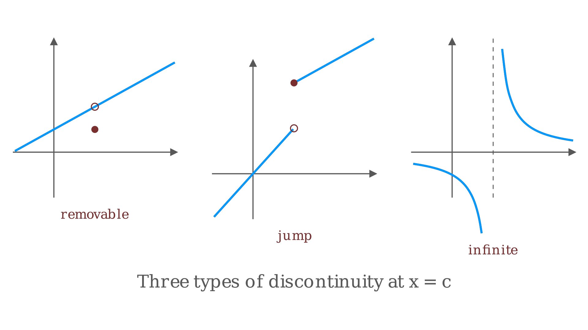
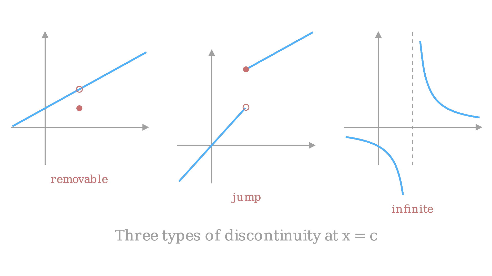
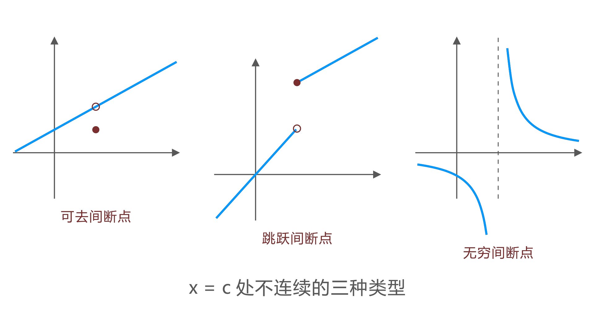
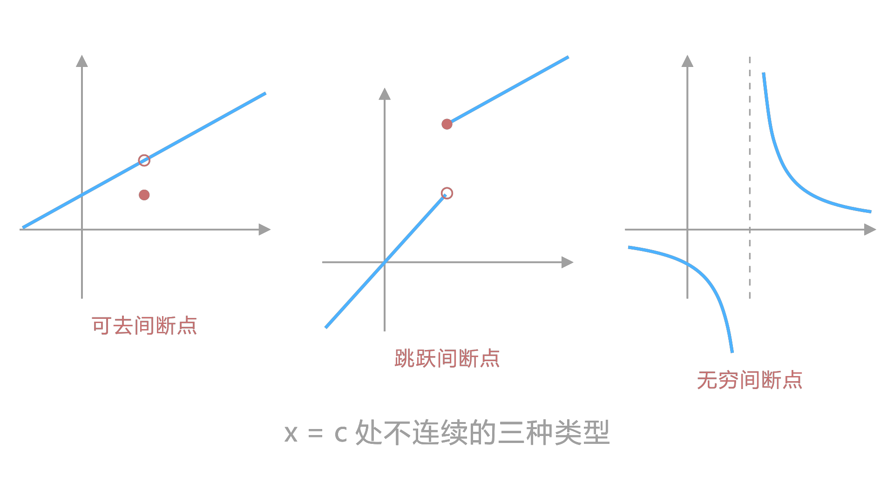
discontinuity）的三种类型
Removable (hole): The limit exists, but $f(c)$ is either undefined or $f(c) \neq \lim_{x \to c} f(x)$. Can be "fixed" by redefining $f(c)$.Jump: Both one-sided limits exist but are not equal: $\lim_{x \to c^-} f(x) \neq \lim_{x \to c^+} f(x)$. Common in piecewise functions.
Infinite (vertical asymptote): At least one of the one-sided limits is $\pm\infty$. 可去间断点（洞）：极限存在，但 $f(c)$ 无定义或 $f(c) \neq \lim_{x \to c} f(x)$。可通过重新定义 $f(c)$ 来"修补"。
跳跃间断点：两个单侧极限都存在但不相等：$\lim_{x \to c^-} f(x) \neq \lim_{x \to c^+} f(x)$。常见于分段函数。
无穷间断点（垂直渐近线）：至少一个单侧极限为 $\pm\infty$。
Worked Example: Classifying a Jump Discontinuity例题：判定跳跃间断点
Classify the discontinuity of $f$ at $x = 1$, where $f(x) = \begin{cases} 2x, & x < 1 \\ x + 3, & x \ge 1 \end{cases}$.判定 $f$ 在 $x = 1$ 处的不连续类型，其中 $f(x) = \begin{cases} 2x, & x < 1 \\ x + 3, & x \ge 1 \end{cases}$。
Step 1: One-sided limits.第 1 步：单侧极限。
$$\lim_{x \to 1^-} 2x = 2 \qquad \lim_{x \to 1^+} (x + 3) = 4$$Step 2: Compare. Both one-sided limits are finite but $2 \neq 4$, so the two-sided limit does not exist. Because the two sides are finite and simply "jump," this is a jump discontinuity.第 2 步：比较。两个单侧极限均有限，但 $2 \neq 4$，故双侧极限不存在。由于两侧都有限且发生"跳跃"，这是跳跃间断点。
Worked Example: Classifying an Infinite Discontinuity例题：判定无穷间断点
Classify the discontinuity of $f(x) = \dfrac{x + 1}{x - 2}$ at $x = 2$.判定 $f(x) = \dfrac{x + 1}{x - 2}$ 在 $x = 2$ 处的不连续类型。
Step 1: Check the form. At $x = 2$: numerator $\to 3$, denominator $\to 0$, giving $\frac{3}{0}$: nonzero over zero, so the factor does not cancel.第 1 步：检查形式。当 $x = 2$ 时：分子 $\to 3$，分母 $\to 0$，得 $\frac{3}{0}$：非零比零，因式不能约去。
Step 2: One-sided behavior. As $x \to 2^-$, $f \to -\infty$; as $x \to 2^+$, $f \to +\infty$. At least one side is infinite, so this is an infinite discontinuity with a vertical asymptote at $x = 2$.第 2 步：单侧行为。当 $x \to 2^-$ 时 $f \to -\infty$；当 $x \to 2^+$ 时 $f \to +\infty$。至少一侧为无穷，故为无穷间断点，在 $x = 2$ 处有垂直渐近线。
Decide by the Form First. A fast triage: substitute at $x = c$. A $\frac{0}{0}$ form that cancels signals a removable hole; a $\frac{k}{0}$ form ($k \neq 0$) signals an infinite discontinuity; a piecewise definition whose one-sided limits are finite but unequal signals a jump. Always confirm with one-sided limits before naming the type.
先由形式判断。快速分流：在 $x = c$ 处代入。可约去的 $\frac{0}{0}$ 型意味着可去的洞；$\frac{k}{0}$ 型（$k \neq 0$）意味着无穷间断点；单侧极限有限但不相等的分段定义意味着跳跃。命名类型前务必用单侧极限确认。
1. Classify the discontinuities of $f(x) = \dfrac{x - 3}{x^2 - 9}$.1. 对 $f(x) = \dfrac{x - 3}{x^2 - 9}$ 的间断点分类。
$f(x) = \dfrac{x - 3}{(x - 3)(x + 3)} = \dfrac{1}{x + 3}$ for $x \neq 3$. At $x = 3$ the limit is $\frac{1}{6}$ but $f(3)$ is undefined: removable. At $x = -3$ the form is $\frac{-6}{0}$: infinite discontinuity (vertical asymptote).
当 $x \neq 3$ 时 $f(x) = \dfrac{x - 3}{(x - 3)(x + 3)} = \dfrac{1}{x + 3}$。在 $x = 3$ 处极限为 $\frac{1}{6}$，但 $f(3)$ 无定义：可去间断。在 $x = -3$ 处形式为 $\frac{-6}{0}$：无穷间断（垂直渐近线）。
2. Let $f(x) = x + 1$ for $x \neq 0$ and $f(0) = 2$. Classify the discontinuity at $x = 0$.2. 设当 $x \neq 0$ 时 $f(x) = x + 1$，且 $f(0) = 2$。判断 $x = 0$ 处间断点的类型。
$\lim_{x \to 0} f(x) = 1$ exists but $f(0) = 2 \neq 1$, so the discontinuity is removable.
$\lim_{x \to 0} f(x) = 1$ 存在，但 $f(0) = 2 \neq 1$，所以是可去间断。
3. Classify the discontinuity of $f(x) = \dfrac{|x - 2|}{x - 2}$ at $x = 2$.3. 判断 $f(x) = \dfrac{|x - 2|}{x - 2}$ 在 $x = 2$ 处间断点的类型。
For $x < 2$, $f(x) = -1$; for $x > 2$, $f(x) = 1$. The one-sided limits $-1$ and $1$ are finite but different, so it is a jump discontinuity.
当 $x < 2$ 时 $f(x) = -1$；当 $x > 2$ 时 $f(x) = 1$。单侧极限 $-1$ 与 $1$ 都有限但不相等，所以是跳跃间断。
Defining Continuity at a Point某点处连续性的定义
- State the three conditions for continuity at $x = c$.
- Verify each condition with a calculated value.
- Identify which condition fails at a discontinuity.
- Solve for a parameter that makes a piecewise function continuous.
- Write a continuity justification that names $f(c)$, the limit, and their equality.
- 写出 $x = c$ 处连续的三个条件。
- 用计算出的数值逐一验证每个条件。
- 指出间断点处哪一个条件不成立。
- 求使分段函数连续的参数。
- 写出包含 $f(c)$、极限及二者相等的连续性论证。
All three conditions must hold. If any one fails, $f$ is discontinuous at $c$.三个条件必须同时满足。任意一个不成立，$f$ 在 $c$ 处就不连续。
Showing Your Work. When you justify continuity, explicitly verify all three conditions. Write: "$f(c) = \ldots$", "The limit equals $\ldots$", and "Since $f(c)$ equals the limit, $f$ is continuous at $c$." If discontinuous, state which condition fails.
书写过程。论证连续性时，务必明确地验证全部三个条件。写出："$f(c) = \ldots$"、"极限等于 $\ldots$"、"由于 $f(c)$ 等于极限，$f$ 在 $c$ 处连续。"若不连续，说明哪一条不满足。
Worked Example: Testing Continuity例题：判断连续性
Is $f$ continuous at $x = 2$?$f$ 在 $x = 2$ 处连续吗？
$$f(x) = \begin{cases} x^2 - 1, & x < 2 \\ 5, & x = 2 \\ 2x + 1, & x > 2 \end{cases}$$Condition 1: $f(2) = 5$ ✓ (defined)条件 1：$f(2) = 5$ ✓（有定义）
Condition 2: Check the limit:条件 2：检查极限：
$$\begin{aligned} \text{Left: } &\lim_{x \to 2^-}(x^2 - 1) = 4 - 1 = 3 \\[4pt] \text{Right: } &\lim_{x \to 2^+}(2x + 1) = 4 + 1 = 5 \end{aligned}$$Left $\neq$ Right, so the limit does not exist. Condition 2 fails: $f$ is discontinuous at $x = 2$ (jump discontinuity).左 $\neq$ 右，所以极限不存在。条件 2 不满足：$f$ 在 $x = 2$ 处不连续（跳跃间断点）。
Worked Example: Verifying Continuity Holds例题：验证连续性成立
Show that $f(x) = \begin{cases} \frac{x^2 - 9}{x - 3}, & x \neq 3 \\ 6, & x = 3 \end{cases}$ is continuous at $x = 3$.证明 $f(x) = \begin{cases} \frac{x^2 - 9}{x - 3}, & x \neq 3 \\ 6, & x = 3 \end{cases}$ 在 $x = 3$ 处连续。
Condition 1: $f(3)$ is defined. By the rule, $f(3) = 6$. ✓条件 1：$f(3)$ 有定义。由定义，$f(3) = 6$。✓
Condition 2: the limit exists. For $x \neq 3$, factor and cancel:条件 2：极限存在。当 $x \neq 3$ 时，因式分解并约分：
$$\lim_{x \to 3} \frac{x^2 - 9}{x - 3} = \lim_{x \to 3} \frac{(x-3)(x+3)}{x-3} = \lim_{x \to 3}(x + 3) = 6$$Condition 3: they match. Since $\lim_{x \to 3} f(x) = 6 = f(3)$, all three conditions hold, so $f$ is continuous at $x = 3$. The piecewise value $6$ was chosen precisely to plug the hole.条件 3：两者相等。由于 $\lim_{x \to 3} f(x) = 6 = f(3)$，三个条件都满足，故 $f$ 在 $x = 3$ 处连续。分段取值 $6$ 恰好是为了补上这个洞。
1. Let $f(x) = \dfrac{x^2 - 4}{x - 2}$ for $x \neq 2$ and $f(2) = 3$. Is $f$ continuous at $x = 2$?1. 设当 $x \neq 2$ 时 $f(x) = \dfrac{x^2 - 4}{x - 2}$，且 $f(2) = 3$。$f$ 在 $x = 2$ 处连续吗？
No. $f(2) = 3$ is defined and $\lim_{x \to 2} f(x) = \lim_{x \to 2}(x + 2) = 4$ exists, but $4 \neq 3$, so condition 3 fails.
不连续。$f(2) = 3$ 有定义，$\lim_{x \to 2} f(x) = \lim_{x \to 2}(x + 2) = 4$ 存在，但 $4 \neq 3$，所以条件 3 不成立。
2. Which continuity condition fails first for $f(x) = \frac{1}{x}$ at $x = 0$?2. 对 $f(x) = \frac{1}{x}$ 在 $x = 0$ 处，最先不成立的是哪个连续条件？
Condition 1: $f(0)$ is undefined. (Condition 2 also fails, since the one-sided limits are $-\infty$ and $+\infty$.)
条件 1：$f(0)$ 无定义。（条件 2 也不成立，因为两个单侧极限分别为 $-\infty$ 与 $+\infty$。）
3. Find $a$ and $b$ so that $f$ is continuous at $x = 2$, where $f(x) = ax + 1$ for $x < 2$, $f(2) = 7$, and $f(x) = x^2 + b$ for $x > 2$.3. 求 $a$ 与 $b$，使 $f$ 在 $x = 2$ 处连续，其中当 $x < 2$ 时 $f(x) = ax + 1$，$f(2) = 7$，当 $x > 2$ 时 $f(x) = x^2 + b$。
Both one-sided limits must equal $f(2) = 7$. Left: $2a + 1 = 7$, so $a = 3$. Right: $4 + b = 7$, so $b = 3$.
两个单侧极限都必须等于 $f(2) = 7$。左侧：$2a + 1 = 7$，所以 $a = 3$。右侧：$4 + b = 7$，所以 $b = 3$。
Confirming Continuity over an Interval确认在区间上的连续性
- State what it means for $f$ to be continuous on an open interval and on a closed interval.
- List the function families that are continuous at every point of their domains.
- Determine the intervals of continuity of rational, radical, logarithmic and piecewise functions.
- Check an endpoint of a closed interval with the matching one-sided limit.
- Explain why a point outside the domain breaks continuity on any interval containing it.
- 说明 $f$ 在开区间上连续与在闭区间上连续的含义。
- 列出在定义域内处处连续的函数类型。
- 求有理函数、根式函数、对数函数与分段函数的连续区间。
- 用相应的单侧极限检查闭区间的端点。
- 解释为什么区间内含有定义域外的点时，函数在该区间上不连续。
continuity）
A function is continuous on an open interval $(a, b)$ if it is continuous at every point in the interval. For a closed interval $[a, b]$, we also require that $\lim_{x \to a^+} f(x) = f(a)$ and $\lim_{x \to b^-} f(x) = f(b)$.
函数在开区间 $(a, b)$ 上连续，是指它在区间内每一点都连续。对于闭区间 $[a, b]$，还要求 $\lim_{x \to a^+} f(x) = f(a)$ 且 $\lim_{x \to b^-} f(x) = f(b)$。
domain）内每一点都连续。利用这一事实可以迅速判定连续区间。
Worked Example: Confirming Continuity on a Closed Interval例题：确认在闭区间上的连续性
Show that $f(x) = \sqrt{4 - x^2}$ is continuous on the closed interval $[-2, 2]$.证明 $f(x) = \sqrt{4 - x^2}$ 在闭区间 $[-2, 2]$ 上连续。
Step 1: Domain check. $f$ is defined exactly where $4 - x^2 \ge 0$, i.e. on $[-2, 2]$, so the interval matches the natural domain.第 1 步：定义域检查。$f$ 恰好在 $4 - x^2 \ge 0$ 处有定义，即 $[-2, 2]$，与所给区间一致。
Step 2: Interior continuity. $4 - x^2$ is a polynomial, so it is continuous everywhere. Since $\sqrt{u}$ is continuous for every $u \ge 0$, the composition $f(x) = \sqrt{4 - x^2}$ is continuous at every point of the open interval $(-2, 2)$.第 2 步：内部连续性。$4 - x^2$ 是多项式，处处连续。又因 $\sqrt{u}$ 在每个 $u \ge 0$ 处连续，复合函数 $f(x) = \sqrt{4 - x^2}$ 在开区间 $(-2, 2)$ 内每一点都连续。
Step 3: Endpoint (one-sided) checks. Continuity on a closed interval only requires the appropriate one-sided limit to match the function value at each endpoint:第 3 步：端点（单侧）检查。闭区间上的连续性只要求在每个端点处，相应的单侧极限等于函数值：
$$\lim_{x \to -2^+} \sqrt{4 - x^2} = \sqrt{4 - 4} = 0 = f(-2) \qquad \lim_{x \to 2^-} \sqrt{4 - x^2} = \sqrt{4 - 4} = 0 = f(2)$$Both one-sided limits agree with the function value, so $f$ is continuous on all of $[-2, 2]$. This same three-step pattern (domain, interior, endpoints) works for any interval-continuity question: don't stop at "the interior is fine," always close the loop at the boundary.两个单侧极限都与函数值相符，故 $f$ 在整个 $[-2, 2]$ 上连续。这个三步套路（定义域、内部、端点）适用于任何区间连续性问题：不要止步于"内部没问题"，一定要在边界处把结论闭合。
Worked Example: Intervals of Continuity for a Rational Function例题：有理函数的连续区间
Find the intervals on which $f(x) = \dfrac{x + 1}{x^2 - 5x + 6}$ is continuous.求 $f(x) = \dfrac{x + 1}{x^2 - 5x + 6}$ 的连续区间。
Step 1: Find where the denominator is zero. $x^2 - 5x + 6 = (x - 2)(x - 3) = 0$ at $x = 2$ and $x = 3$.第 1 步：找出分母为零的点。$x^2 - 5x + 6 = (x - 2)(x - 3) = 0$，解得 $x = 2$ 与 $x = 3$。
Step 2: Use the domain fact. A rational function is continuous at every point of its domain, so $f$ is continuous everywhere except $x = 2$ and $x = 3$.第 2 步：利用定义域结论。有理函数在定义域内每一点都连续，所以 $f$ 除 $x = 2$ 与 $x = 3$ 外处处连续。
Step 3: Write the intervals.第 3 步：写出区间。
$$(-\infty, 2) \cup (2, 3) \cup (3, \infty)$$Why this works: the numerator $x + 1$ is not zero at $2$ or $3$, so nothing cancels and both points are genuine breaks (vertical asymptotes).原理：分子 $x + 1$ 在 $2$ 与 $3$ 处都不为零，没有因式可以约去，所以两个点都是真正的断点（垂直渐近线）。
Exclude every point outside the domain. Give intervals of continuity in interval notation and remove every $x$ where a denominator is $0$, a square root has a negative radicand, or a logarithm has a non-positive argument. For a piecewise function each piece is continuous on its own interval, so only the boundary points need a limit check.
排除定义域外的每个点。用区间记号写出连续区间，并去掉分母为 $0$、根号下为负、对数真数非正的每个 $x$。对于分段函数，每一段在自己的区间上连续，只需在分界点检查极限。
1. On what interval is $f(x) = \ln(x - 1)$ continuous?1. $f(x) = \ln(x - 1)$ 在哪个区间上连续？
The logarithm needs $x - 1 > 0$, so the domain is $(1, \infty)$, and $f$ is continuous on $(1, \infty)$.
对数要求 $x - 1 > 0$，定义域为 $(1, \infty)$，所以 $f$ 在 $(1, \infty)$ 上连续。
2. Is $f(x) = \frac{1}{x - 2}$ continuous on $[0, 3]$?2. $f(x) = \frac{1}{x - 2}$ 在 $[0, 3]$ 上连续吗？
No. $x = 2$ lies in $[0, 3]$ and $f(2)$ is undefined, so $f$ is not continuous on the whole interval.
不连续。$x = 2$ 在 $[0, 3]$ 内，而 $f(2)$ 无定义，所以 $f$ 在整个区间上不连续。
3. Let $f(x) = x^2$ for $x \le 1$ and $f(x) = 2x - 1$ for $x > 1$. Is $f$ continuous on $(-\infty, \infty)$?3. 设当 $x \le 1$ 时 $f(x) = x^2$，当 $x > 1$ 时 $f(x) = 2x - 1$。$f$ 在 $(-\infty, \infty)$ 上连续吗？
Each piece is a polynomial, so only $x = 1$ needs checking. $f(1) = 1$, $\lim_{x \to 1^-} x^2 = 1$ and $\lim_{x \to 1^+} (2x - 1) = 1$. All three agree, so $f$ is continuous everywhere.
每一段都是多项式，只需检查 $x = 1$。$f(1) = 1$，$\lim_{x \to 1^-} x^2 = 1$，$\lim_{x \to 1^+} (2x - 1) = 1$。三者相等，所以 $f$ 处处连续。
Removing Discontinuities去除不连续点
- Identify a removable discontinuity from a formula or a graph.
- Calculate the value that removes a discontinuity by redefining $f(c)$.
- Solve for a parameter that joins two pieces of a piecewise function.
- Explain why jump and infinite discontinuities cannot be removed.
- Write the redefined function in full piecewise form.
- 从公式或图像中识别可去间断点。
- 通过重新定义 $f(c)$，计算去除间断所需的值。
- 求使分段函数两段相接的参数。
- 解释为什么跳跃间断与无穷间断不能去除。
- 写出重新定义后完整的分段函数。
removable discontinuity）
If $\lim_{x \to c} f(x) = L$ exists but $f(c) \neq L$ (or $f(c)$ is undefined), redefining $f(c) = L$ removes the discontinuity.
若 $\lim_{x \to c} f(x) = L$ 存在，但 $f(c) \neq L$（或 $f(c)$ 无定义），则将 $f(c)$ 重新定义为 $L$ 即可去除该不连续。
Worked Example: Piecewise Continuity例题：分段函数的连续性
Find the value of $k$ that makes $f$ continuous at $x = 2$:求使 $f$ 在 $x = 2$ 处连续的 $k$ 值：
$$f(x) = \begin{cases} kx + 1, & x \le 2 \\ x^2 - 1, & x > 2 \end{cases}$$For continuity, the left and right limits must equal $f(2)$:连续要求左极限与右极限都等于 $f(2)$：
$$\begin{aligned} \text{Left: } &\lim_{x \to 2^-}(kx+1) = 2k + 1 \\[4pt] \text{Right: } &\lim_{x \to 2^+}(x^2 - 1) = 3 \end{aligned}$$Set equal and solve:令两者相等并求解：
$$2k + 1 = 3 \;\;\Longrightarrow\;\; 2k = 2 \;\;\Longrightarrow\;\; k = 1$$Worked Example: Redefining a Function to Remove a Hole例题：重新定义函数以补上空洞
Let $g(x) = \dfrac{x^2 - 2x - 8}{x - 4}$. Define a function that agrees with $g$ for $x \neq 4$ and is continuous at $x = 4$.设 $g(x) = \dfrac{x^2 - 2x - 8}{x - 4}$。定义一个在 $x \neq 4$ 时与 $g$ 相同、且在 $x = 4$ 处连续的函数。
Step 1: Classify. Substitution gives $\frac{16 - 8 - 8}{0} = \frac{0}{0}$, a sign of a removable discontinuity.第 1 步：判别。代入得 $\frac{16 - 8 - 8}{0} = \frac{0}{0}$，提示可能是可去间断。
Step 2: Find the limit.第 2 步：求极限。
$$\lim_{x \to 4} \frac{(x - 4)(x + 2)}{x - 4} = \lim_{x \to 4} (x + 2) = 6$$Step 3: Redefine.第 3 步：重新定义。
$$G(x) = \begin{cases} \dfrac{x^2 - 2x - 8}{x - 4}, & x \neq 4 \\ 6, & x = 4 \end{cases}$$Now $G(4) = 6 = \lim_{x \to 4} G(x)$, so $G$ is continuous at $x = 4$. (In fact $G(x) = x + 2$ for every $x$.)此时 $G(4) = 6 = \lim_{x \to 4} G(x)$，所以 $G$ 在 $x = 4$ 处连续。（事实上对所有 $x$ 都有 $G(x) = x + 2$。）
Why this works: the two-sided limit exists, so assigning that limit as the value satisfies all three continuity conditions.原理：双侧极限存在，把这个极限值作为函数值，就满足了连续的全部三个条件。
Show the limit exists before you patch. Before you call a discontinuity removable, show that the two one-sided limits are equal. Then state the new value and write the full piecewise rule. If the one-sided limits differ (a jump) or one is infinite, say that no choice of $f(c)$ makes $f$ continuous.
修补前先证明极限存在。在称某个间断点为可去之前，先说明两个单侧极限相等。然后写出新的函数值和完整的分段规则。若单侧极限不相等（跳跃）或其中之一为无穷，就说明无论 $f(c)$ 取何值都不能使 $f$ 连续。
1. What value of $f(0)$ makes $f(x) = \dfrac{\sin(3x)}{x}$ continuous at $x = 0$?1. $f(0)$ 取何值时，$f(x) = \dfrac{\sin(3x)}{x}$ 在 $x = 0$ 处连续？
$\lim_{x \to 0} \dfrac{\sin(3x)}{x} = 3 \cdot \lim_{x \to 0} \dfrac{\sin(3x)}{3x} = 3$, so define $f(0) = 3$.
$\lim_{x \to 0} \dfrac{\sin(3x)}{x} = 3 \cdot \lim_{x \to 0} \dfrac{\sin(3x)}{3x} = 3$，所以定义 $f(0) = 3$。
2. Can $f(x) = \frac{1}{x - 1}$ be made continuous at $x = 1$ by choosing $f(1)$?2. 能否通过选取 $f(1)$ 使 $f(x) = \frac{1}{x - 1}$ 在 $x = 1$ 处连续？
No. The one-sided limits are $-\infty$ and $+\infty$, so there is no finite limit for $f(1)$ to match. The discontinuity is infinite, not removable.
不能。单侧极限分别为 $-\infty$ 与 $+\infty$，没有有限的极限可供 $f(1)$ 匹配。这是无穷间断，不是可去间断。
3. Find $k$ so that $f(x) = \dfrac{\sqrt{x} - 2}{x - 4}$ for $x \neq 4$ and $f(4) = k$ is continuous at $x = 4$.3. 求 $k$，使当 $x \neq 4$ 时 $f(x) = \dfrac{\sqrt{x} - 2}{x - 4}$、且 $f(4) = k$ 的函数在 $x = 4$ 处连续。
For $x \ge 0$, $x - 4 = (\sqrt{x} - 2)(\sqrt{x} + 2)$, so $f(x) = \dfrac{1}{\sqrt{x} + 2}$ for $x \neq 4$ and the limit is $\dfrac{1}{2 + 2} = \dfrac{1}{4}$. So $k = \dfrac{1}{4}$.
当 $x \ge 0$ 时 $x - 4 = (\sqrt{x} - 2)(\sqrt{x} + 2)$，所以当 $x \neq 4$ 时 $f(x) = \dfrac{1}{\sqrt{x} + 2}$，极限为 $\dfrac{1}{2 + 2} = \dfrac{1}{4}$。所以 $k = \dfrac{1}{4}$。
Connecting Infinite Limits and Vertical Asymptotes无穷极限与垂直渐近线的联系
- Define an infinite limit and a vertical asymptote.
- Determine the sign of a one-sided infinite limit by sign analysis.
- Distinguish a vertical asymptote from a hole by checking for a common factor.
- Predict the behaviour on each side from an even or odd power in the denominator.
- Explain that $\lim = \infty$ describes how a limit fails to exist as a real number.
- 给出无穷极限与垂直渐近线的定义。
- 用符号分析确定单侧无穷极限的符号。
- 通过检查公因式区分垂直渐近线与空洞。
- 由分母中因式的奇偶次幂预测两侧的行为。
- 解释 $\lim = \infty$ 描述的是极限作为实数不存在的方式。
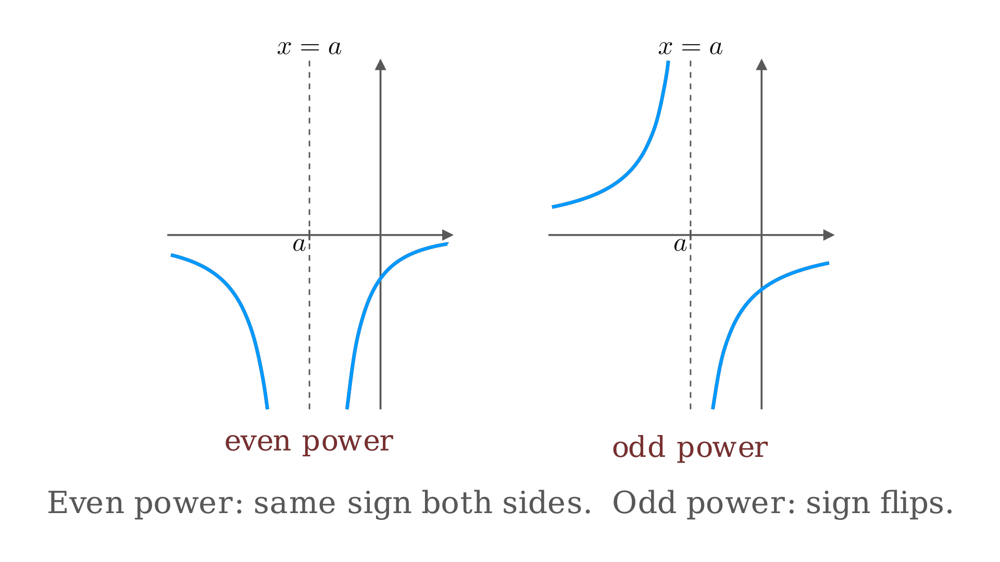
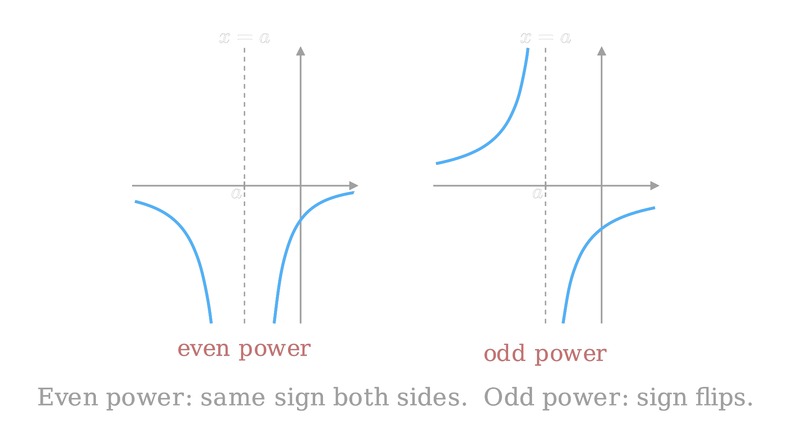
vertical asymptote）
If $\lim_{x \to c^+} f(x) = \pm\infty$ or $\lim_{x \to c^-} f(x) = \pm\infty$, then $x = c$ is a vertical asymptote. This occurs when the denominator approaches $0$ while the numerator approaches a nonzero value.
若 $\lim_{x \to c^+} f(x) = \pm\infty$ 或 $\lim_{x \to c^-} f(x) = \pm\infty$，则 $x = c$ 是垂直渐近线。当分母趋于 $0$ 而分子趋于非零值时即出现这种情形。
Worked Example: Sign Analysis at a Vertical Asymptote例题：垂直渐近线处的符号分析
Find the one-sided limits of $f(x) = \dfrac{x - 4}{(x + 1)^2}$ as $x \to -1$.求 $f(x) = \dfrac{x - 4}{(x + 1)^2}$ 当 $x \to -1$ 时的单侧极限。
Step 1: Form check. At $x = -1$: numerator $\to -5$, denominator $\to 0$, giving $\frac{-5}{0}$: infinite.第 1 步：形式检查。当 $x = -1$ 时：分子 $\to -5$，分母 $\to 0$，得 $\frac{-5}{0}$：无穷。
Step 2: Sign of the denominator. Because $(x+1)^2$ is a square, it approaches $0^+$ from both sides.第 2 步：分母的符号。因 $(x+1)^2$ 为平方，从两侧都趋于 $0^+$。
Step 3: Combine signs. Negative numerator over a tiny positive denominator gives $-\infty$ on each side:第 3 步：综合符号。负的分子除以极小的正分母，两侧都得 $-\infty$：
$$\lim_{x \to -1^-} f(x) = -\infty \qquad \lim_{x \to -1^+} f(x) = -\infty$$Both sides agree at $-\infty$, so we may also write $\lim_{x \to -1} f(x) = -\infty$, and $x = -1$ is a vertical asymptote.两侧都为 $-\infty$，故也可写 $\lim_{x \to -1} f(x) = -\infty$，且 $x = -1$ 为垂直渐近线。
Worked Example: Finding Every Vertical Asymptote例题：找出所有垂直渐近线
Find the vertical asymptotes of $f(x) = \dfrac{x - 1}{x^2 - x - 2}$ and the one-sided limits at each.求 $f(x) = \dfrac{x - 1}{x^2 - x - 2}$ 的垂直渐近线及每条渐近线处的单侧极限。
Step 1: Factor. $x^2 - x - 2 = (x - 2)(x + 1)$. The numerator $x - 1$ is not zero at $x = 2$ or $x = -1$, so nothing cancels: both are vertical asymptotes.第 1 步：因式分解。$x^2 - x - 2 = (x - 2)(x + 1)$。分子 $x - 1$ 在 $x = 2$ 与 $x = -1$ 处都不为零，没有因式可约：两者都是垂直渐近线。
Step 2: Signs near $x = 2$. $x - 1 \to 1$ and $x + 1 \to 3$ are positive, so the sign follows $x - 2$:第 2 步：$x = 2$ 附近的符号。$x - 1 \to 1$ 与 $x + 1 \to 3$ 都为正，所以符号由 $x - 2$ 决定：
$$\lim_{x \to 2^-} f(x) = \frac{1}{(0^-)(3)} = -\infty \qquad \lim_{x \to 2^+} f(x) = \frac{1}{(0^+)(3)} = +\infty$$Step 3: Signs near $x = -1$. $x - 1 \to -2$ and $x - 2 \to -3$, so $\frac{x - 1}{x - 2} \to \frac{2}{3} > 0$ and the sign follows $x + 1$:第 3 步：$x = -1$ 附近的符号。$x - 1 \to -2$，$x - 2 \to -3$，所以 $\frac{x - 1}{x - 2} \to \frac{2}{3} > 0$，符号由 $x + 1$ 决定：
$$\lim_{x \to -1^-} f(x) = -\infty \qquad \lim_{x \to -1^+} f(x) = +\infty$$Why this works: near each asymptote every factor except one keeps a fixed sign, so the one factor that changes sign decides the direction on each side.原理：在每条渐近线附近，除一个因式外其余因式符号不变，所以由那个变号的因式决定每一侧的方向。
Cancel first, then report signs. Before you call $x = c$ a vertical asymptote, cancel any common factor; a factor that cancels gives a hole, not an asymptote. Report each one-sided infinite limit with its sign and a brief sign reason. Writing $\lim = \infty$ describes how the limit fails to exist; it is not a real-number value.
先约分，再写符号。在称 $x = c$ 为垂直渐近线之前，先约去公因式；能约去的因式对应空洞，而不是渐近线。写出每个单侧无穷极限的符号，并简要说明符号理由。写 $\lim = \infty$ 是在描述极限不存在的方式，它不是一个实数值。
1. Find $\lim_{x \to 2^-} \dfrac{3}{x - 2}$.1. 求 $\lim_{x \to 2^-} \dfrac{3}{x - 2}$。
For $x$ slightly less than $2$, $x - 2$ is a small negative number, so $\frac{3}{x - 2} \to -\infty$.
当 $x$ 略小于 $2$ 时，$x - 2$ 是很小的负数，所以 $\frac{3}{x - 2} \to -\infty$。
2. Does $f(x) = \dfrac{x^2 - 4}{x - 2}$ have a vertical asymptote at $x = 2$?2. $f(x) = \dfrac{x^2 - 4}{x - 2}$ 在 $x = 2$ 处有垂直渐近线吗？
No. The factor $x - 2$ cancels, leaving $x + 2$, so the limit is $4$ and the graph has a hole at $(2, 4)$.
没有。因式 $x - 2$ 可约去，剩下 $x + 2$，所以极限为 $4$，图像在 $(2, 4)$ 处有一个空洞。
3. Find $\lim_{x \to 0} \dfrac{x + 1}{x^2(x - 1)}$.3. 求 $\lim_{x \to 0} \dfrac{x + 1}{x^2(x - 1)}$。
Near $0$: $x + 1 \to 1$, $x - 1 \to -1$, and $x^2 \to 0^+$ from both sides. So the quotient behaves like $\frac{1}{(0^+)(-1)}$, which tends to $-\infty$ on both sides, and $\lim_{x \to 0} f(x) = -\infty$.
在 $0$ 附近：$x + 1 \to 1$，$x - 1 \to -1$，$x^2 \to 0^+$（两侧都如此）。所以商的行为类似 $\frac{1}{(0^+)(-1)}$，两侧都趋于 $-\infty$，故 $\lim_{x \to 0} f(x) = -\infty$。
Connecting Limits at Infinity and Horizontal Asymptotes无穷处的极限与水平渐近线的联系
- Define a limit at infinity and a horizontal asymptote.
- Determine the end behaviour of a rational function by comparing degrees.
- Calculate a limit at infinity by dividing by the highest power of $x$ in the denominator.
- Handle square roots at $-\infty$, where $\sqrt{x^2} = -x$.
- Explain that a graph may cross its horizontal asymptote.
- 给出无穷处的极限与水平渐近线的定义。
- 通过比较次数判断有理函数的末端行为。
- 通过除以分母中 $x$ 的最高次幂计算无穷处的极限。
- 处理 $-\infty$ 处的根式，此时 $\sqrt{x^2} = -x$。
- 解释图像可以与其水平渐近线相交。
horizontal asymptote）规则
For $f(x) = \frac{a_n x^n + \cdots}{b_m x^m + \cdots}$:If $n < m$: HA at $y = 0$. Numerator's degree is smaller: denominator "wins."
If $n = m$: HA at $y = \frac{a_n}{b_m}$ (ratio of leading coefficients).
If $n > m$: No horizontal asymptote. The function grows without bound. 对 $f(x) = \frac{a_n x^n + \cdots}{b_m x^m + \cdots}$：
若 $n < m$：水平渐近线为 $y = 0$。分子次数较小：分母"取胜"。
若 $n = m$：水平渐近线为 $y = \frac{a_n}{b_m}$（首项系数之比）。
若 $n > m$：无水平渐近线，函数无界增大。
Worked Example: Equal Degrees (Divide by Highest Power)例题：次数相同（除以最高次幂）
Find $\displaystyle\lim_{x \to \infty} \frac{6x^2 - 5x + 1}{2x^2 + 7}$.求 $\displaystyle\lim_{x \to \infty} \frac{6x^2 - 5x + 1}{2x^2 + 7}$。
Step 1: Divide every term by $x^2$ (the highest power in the denominator):第 1 步：每一项都除以 $x^2$（分母中的最高次幂）：
$$\frac{6x^2 - 5x + 1}{2x^2 + 7} = \frac{6 - \frac{5}{x} + \frac{1}{x^2}}{2 + \frac{7}{x^2}}$$Step 2: Send $x \to \infty$. Every $\frac{1}{x}$ and $\frac{1}{x^2}$ term tends to $0$:第 2 步：令 $x \to \infty$。每个 $\frac{1}{x}$ 与 $\frac{1}{x^2}$ 项都趋于 $0$：
$$\lim_{x \to \infty} \frac{6 - \frac{5}{x} + \frac{1}{x^2}}{2 + \frac{7}{x^2}} = \frac{6 - 0 + 0}{2 + 0} = 3$$The ratio of leading coefficients $\frac{6}{2} = 3$ confirms the horizontal asymptote $y = 3$.首项系数之比 $\frac{6}{2} = 3$ 印证了水平渐近线 $y = 3$。
Worked Example: A Radical at Infinity例题：含根号的无穷极限
Find $\displaystyle\lim_{x \to \infty} \frac{\sqrt{9x^2 + 1}}{x + 4}$.求 $\displaystyle\lim_{x \to \infty} \frac{\sqrt{9x^2 + 1}}{x + 4}$。
Step 1: Estimate the top's degree. For large $x$, $\sqrt{9x^2 + 1} \approx \sqrt{9x^2} = 3x$, so the top behaves like a first-degree term, matching the bottom.第 1 步：估计分子的次数。当 $x$ 很大时，$\sqrt{9x^2 + 1} \approx \sqrt{9x^2} = 3x$，故分子表现为一次项，与分母同次。
Step 2: Divide by $x$. For $x > 0$, $x = \sqrt{x^2}$, so pull it inside the root:第 2 步：除以 $x$。当 $x > 0$ 时 $x = \sqrt{x^2}$，可将其移入根号内：
$$\frac{\sqrt{9x^2 + 1}}{x + 4} = \frac{\sqrt{9 + \frac{1}{x^2}}}{1 + \frac{4}{x}}$$Step 3: Take the limit.第 3 步：求极限。
$$\lim_{x \to \infty} \frac{\sqrt{9 + \frac{1}{x^2}}}{1 + \frac{4}{x}} = \frac{\sqrt{9}}{1} = 3$$Check both directions with a root. With a square root, the sign matters as $x \to -\infty$. For $x < 0$, $\sqrt{x^2} = -x$, so $\lim_{x \to -\infty} \dfrac{\sqrt{9x^2 + 1}}{x + 4} = -3$, while the limit at $+\infty$ is $3$. Compute both before you list the horizontal asymptotes ($y = 3$ and $y = -3$ here).
含根式时两个方向都要检查。含根式时，$x \to -\infty$ 的符号很关键。当 $x < 0$ 时 $\sqrt{x^2} = -x$，所以 $\lim_{x \to -\infty} \dfrac{\sqrt{9x^2 + 1}}{x + 4} = -3$，而 $+\infty$ 处的极限为 $3$。两个方向都算出后再列出水平渐近线（此处为 $y = 3$ 与 $y = -3$）。
1. Find $\lim_{x \to \infty} \dfrac{5 - 2x^3}{x^3 + 4x}$.1. 求 $\lim_{x \to \infty} \dfrac{5 - 2x^3}{x^3 + 4x}$。
Equal degrees ($3$), so the limit is the ratio of leading coefficients: $\frac{-2}{1} = -2$.
次数相同（均为 $3$），极限等于首项系数之比：$\frac{-2}{1} = -2$。
2. Find $\lim_{x \to -\infty} \dfrac{3x^2 + 1}{x - 7}$.2. 求 $\lim_{x \to -\infty} \dfrac{3x^2 + 1}{x - 7}$。
The numerator has higher degree. For large $|x|$ the quotient behaves like $\frac{3x^2}{x} = 3x$, which tends to $-\infty$ as $x \to -\infty$. There is no horizontal asymptote on that side.
分子次数更高。当 $|x|$ 很大时，商的行为类似 $\frac{3x^2}{x} = 3x$，当 $x \to -\infty$ 时趋于 $-\infty$。这一侧没有水平渐近线。
3. Can a graph cross its horizontal asymptote? Give an example.3. 图像能否与它的水平渐近线相交？举例说明。
Yes. $f(x) = \dfrac{x}{x^2 + 1}$ has horizontal asymptote $y = 0$ (degree $1 < 2$), yet $f(0) = 0$, so the graph crosses $y = 0$ at the origin. A horizontal asymptote describes behaviour only as $x \to \pm\infty$.
可以。$f(x) = \dfrac{x}{x^2 + 1}$ 的水平渐近线为 $y = 0$（次数 $1 < 2$），但 $f(0) = 0$，所以图像在原点穿过 $y = 0$。水平渐近线只描述 $x \to \pm\infty$ 时的行为。
Working with the Intermediate Value Theorem (IVT)介值定理（IVT）的应用
- State the hypotheses and the conclusion of the Intermediate Value Theorem.
- Verify continuity on a closed interval before applying the IVT.
- Show that a target value lies between $f(a)$ and $f(b)$ by calculating both.
- Write a complete IVT justification in three parts.
- Explain that the IVT guarantees existence, not uniqueness, and fails without continuity.
- 写出介值定理的前提与结论。
- 应用介值定理前先验证函数在闭区间上连续。
- 计算 $f(a)$ 与 $f(b)$，说明目标值位于二者之间。
- 分三部分写出完整的介值定理论证。
- 解释介值定理保证存在性而非唯一性，且没有连续性时不能使用。
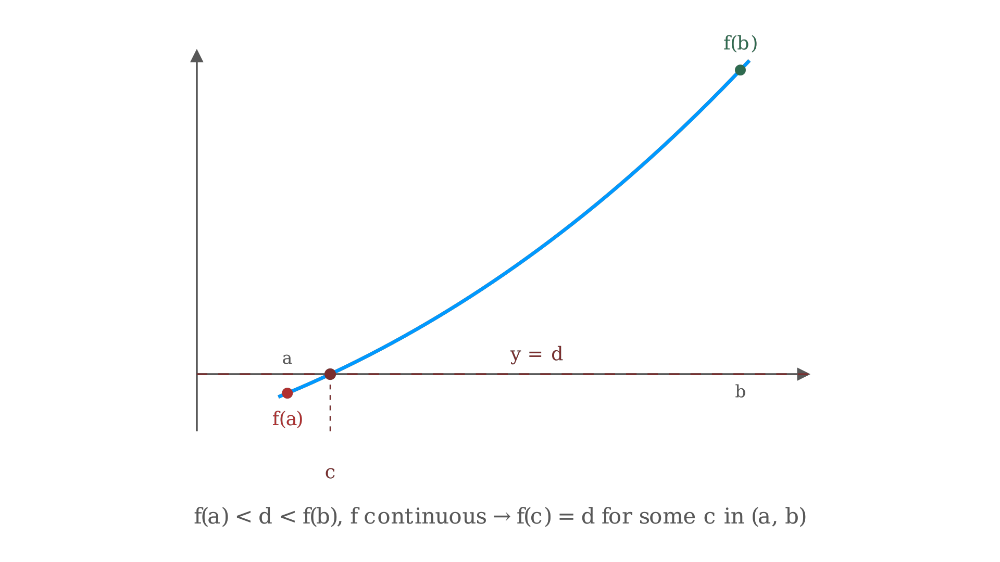
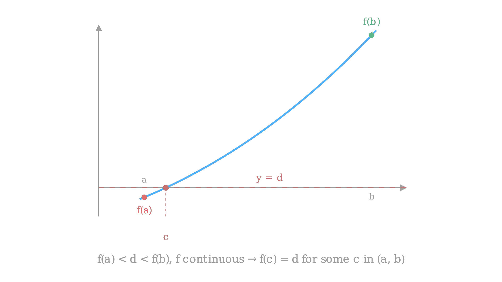
Worked Example: IVT to Show a Root Exists例题：用介值定理证明根存在
Show that $f(x) = x^3 - 2x - 5$ has a root on $[2,\,3]$.证明 $f(x) = x^3 - 2x - 5$ 在 $[2,\,3]$ 上有根。
Step 1: $f$ is a polynomial, so it is continuous everywhere, including on $[2, 3]$.第 1 步：$f$ 是多项式，所以处处连续，在 $[2, 3]$ 上也连续。
Step 2: Evaluate the endpoints:第 2 步：计算两个端点的值：
$$\begin{aligned} f(2) &= 8 - 4 - 5 = -1 \quad (\text{negative}) \\[4pt] f(3) &= 27 - 6 - 5 = 16 \quad (\text{positive}) \end{aligned}$$Step 3: Since $f(2) < 0 < f(3)$ and $f$ is continuous on $[2, 3]$, the IVT guarantees at least one $c \in (2, 3)$ where $f(c) = 0$. ✓第 3 步：由于 $f(2) < 0 < f(3)$ 且 $f$ 在 $[2, 3]$ 上连续，由介值定理至少存在一个 $c \in (2, 3)$ 使 $f(c) = 0$。✓
Worked Example: IVT for an Intermediate Value (Not Just a Root)例题：介值定理求中间值（不只是根）
Let $f(x) = x^2 + x$. Show that $f$ takes the value $3$ somewhere on $[0, 2]$.设 $f(x) = x^2 + x$。证明 $f$ 在 $[0, 2]$ 上某处取值 $3$。
Step 1: Continuity. $f$ is a polynomial, hence continuous on $[0, 2]$.第 1 步：连续性。$f$ 是多项式，故在 $[0, 2]$ 上连续。
Step 2: Endpoints straddle the target $d = 3$.第 2 步：两端点夹住目标值 $d = 3$。
$$f(0) = 0 \qquad f(2) = 4 + 2 = 6, \qquad 0 < 3 < 6$$Step 3: Apply the IVT. Since $f$ is continuous on $[0, 2]$ and $3$ lies between $f(0) = 0$ and $f(2) = 6$, there exists $c \in (0, 2)$ with $f(c) = 3$. (Solving $x^2 + x - 3 = 0$ confirms $c = \frac{-1 + \sqrt{13}}{2} \approx 1.30$.)第 3 步：应用介值定理。由于 $f$ 在 $[0, 2]$ 上连续，且 $3$ 位于 $f(0) = 0$ 与 $f(2) = 6$ 之间，故存在 $c \in (0, 2)$ 使 $f(c) = 3$。（解 $x^2 + x - 3 = 0$ 得 $c = \frac{-1 + \sqrt{13}}{2} \approx 1.30$，予以印证。）
IVT Guarantees Existence, Not Uniqueness. The IVT tells you at least one $c$ exists; it never says how many. A wiggly continuous function can hit the target value several times. Also remember the theorem is one-directional: if the hypotheses fail (e.g. $f$ is discontinuous), the conclusion may still happen to hold; you simply cannot use the IVT to justify it.
介值定理保证存在性，而非唯一性。介值定理只告诉你至少存在一个 $c$，从不说明有几个。一个上下起伏的连续函数可能多次取到目标值。还要记住定理是单向的：若前提不成立（例如 $f$ 不连续），结论也许仍然成立；只是你不能用介值定理来论证它。
1. $f$ is continuous on $[1, 4]$ with $f(1) = 6$ and $f(4) = -2$. Must $f(c) = 3$ for some $c \in (1, 4)$?1. $f$ 在 $[1, 4]$ 上连续，$f(1) = 6$，$f(4) = -2$。是否一定存在 $c \in (1, 4)$ 使 $f(c) = 3$？
Yes. $f$ is continuous on $[1, 4]$ and $3$ lies between $f(4) = -2$ and $f(1) = 6$, so by the IVT there is a $c \in (1, 4)$ with $f(c) = 3$.
是。$f$ 在 $[1, 4]$ 上连续，且 $3$ 位于 $f(4) = -2$ 与 $f(1) = 6$ 之间，由介值定理，存在 $c \in (1, 4)$ 使 $f(c) = 3$。
2. For $f(x) = \frac{1}{x}$, $f(-1) = -1$ and $f(1) = 1$. Does the IVT guarantee a zero in $(-1, 1)$?2. 对 $f(x) = \frac{1}{x}$，$f(-1) = -1$，$f(1) = 1$。介值定理能保证 $(-1, 1)$ 内有零点吗？
No. $f$ is not continuous on $[-1, 1]$ because it is undefined at $x = 0$, so the IVT does not apply. In fact $\frac{1}{x}$ is never $0$.
不能。$f$ 在 $x = 0$ 处无定义，因此在 $[-1, 1]$ 上不连续，介值定理不适用。事实上 $\frac{1}{x}$ 永远不等于 $0$。
3. Show that $x^3 + x = 5$ has a solution in $[1, 2]$.3. 证明方程 $x^3 + x = 5$ 在 $[1, 2]$ 上有解。
Let $g(x) = x^3 + x$. It is a polynomial, so it is continuous on $[1, 2]$. $g(1) = 1 + 1 = 2$ and $g(2) = 8 + 2 = 10$, and $2 < 5 < 10$. By the IVT there is a $c \in (1, 2)$ with $g(c) = 5$, so the equation has a solution there.
设 $g(x) = x^3 + x$。它是多项式，所以在 $[1, 2]$ 上连续。$g(1) = 1 + 1 = 2$，$g(2) = 8 + 2 = 10$，且 $2 < 5 < 10$。由介值定理，存在 $c \in (1, 2)$ 使 $g(c) = 5$，所以方程在该区间内有解。
Exam Strategy & Common Pitfalls备考策略与常见陷阱
- Three conditions for continuity连续性的三个条件
- $\lim_{x \to 0} \frac{\sin x}{x} = 1$
- $\lim_{x \to 0} \frac{1 - \cos x}{x} = 0$
- Limit laws (sum, product, quotient)极限法则（和、积、商）
- IVT statement & conditions介值定理的陈述与前提
- Rational function HA rules ($n < m$, $n = m$, $n > m$)有理函数水平渐近线规则（$n < m$、$n = m$、$n > m$）
- Why $\lim_{x \to c} f(x) \neq f(c)$ in general为何一般而言 $\lim_{x \to c} f(x) \neq f(c)$
- How to classify discontinuities如何对不连续点分类
- When and why each algebraic technique works每种代数技巧何时、为何奏效
- Squeeze Theorem logic夹逼定理的逻辑
- Reading limits from graphs and tables从图像与表格读出极限
- Sign analysis for infinite limits无穷极限的符号分析
Common Pitfalls常见陷阱
2. Writing "limit = $\frac{0}{0}$": $\frac{0}{0}$ is not a limit value, it's a signal to do more work.
3. Forgetting to check both one-sided limits when claiming a limit exists.
4. On IVT problems, failing to state that $f$ is continuous: the hypothesis is required.
5. Confusing "the limit is $\infty$" with "the limit exists": an infinite limit means the limit DNE as a real number.
6. Incorrectly simplifying $\frac{\sin(kx)}{x}$: the answer is $k$, not $1$. 1. 不验证连续性就直接假定 $\lim_{x \to c} f(x) = f(c)$。
2. 写出"极限 = $\frac{0}{0}$"：$\frac{0}{0}$ 不是极限值，它只是要求你继续化简的信号。
3. 断言极限存在时漏掉对左右两侧单侧极限的验证。
4. 介值定理题中遗漏"$f$ 连续"这一前提：该前提是必要的。
5. 把"极限为 $\infty$"与"极限存在"混为一谈：无穷极限意味着该极限作为实数不存在（DNE）。
6. 对 $\frac{\sin(kx)}{x}$ 化简错误：答案是 $k$，而不是 $1$。
Flashcards闪卡
2. $\lim_{x \to c} f(x)$ exists
3. $\lim_{x \to c} f(x) = f(c)$1. $f(c)$ 有定义
2. $\lim_{x \to c} f(x)$ 存在
3. $\lim_{x \to c} f(x) = f(c)$
Unit 1: Practice Quiz第 1 单元：练习测验
Test your understanding. Each question shows feedback as soon as you choose an answer.检验你的理解。每道题在你选择答案后立即给出反馈。
Readiness Checklist应考清单
Click each item you've mastered. Aim for 100% before exam day.点击每一项已掌握的条目。考试前争取达到 100%。
- Approximate instantaneous rate of change from average rate of change用平均变化率近似瞬时变化率
- Use correct limit notation (one-sided and two-sided)正确使用极限记号（单侧与双侧）
- Estimate limits from graphs (including DNE cases)由图像估计极限（含 DNE 情形）
- Estimate limits from tables of values由数值表估计极限
- Apply limit laws (sum, product, quotient, composite)运用极限法则（和、积、商、复合）
- Evaluate limits by factoring and canceling通过因式分解与约分求极限
- Evaluate limits by conjugate multiplication通过共轭相乘求极限
- Select the appropriate limit technique for a given problem为给定题目选择合适的求极限方法
- Apply the Squeeze Theorem应用夹逼定理
- Evaluate $\lim \frac{\sin(kx)}{x}$ and $\lim \frac{1 - \cos x}{x}$求 $\lim \frac{\sin(kx)}{x}$ 与 $\lim \frac{1 - \cos x}{x}$
- Classify discontinuities (removable, jump, infinite)对不连续点分类（可去、跳跃、无穷）
- Verify all three conditions for continuity at a point验证某点处连续的全部三个条件
- Solve for parameters to make piecewise functions continuous求参数使分段函数连续
- Find vertical asymptotes via infinite limits借助无穷极限求垂直渐近线
- Find horizontal asymptotes via limits at infinity借助无穷处极限求水平渐近线
- Apply the IVT with full justification完整论证地应用介值定理
AP-Style Practice ProblemsAP 风格练习题
Exam-level practice for this unit: multiple-choice plus extended-response items in the AP style. Go here after you've worked through the notes and the in-page quizzes above.本单元考试级别的练习：AP 风格的多选题与拓展回答题。请在完成上方笔记与页内测验后再到此练习。